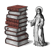

Пер. с лат. Vita Norberti archiepiscopi Magdeburgensis
/ ed. R. Wilmans // Monumenta Germaniae Historica. Scriptores (in Folio).
— Bd. 12 / ed. G. H. Pertz. — Hannoverae, 1856. — S. 663–703.
В год 1115 от воплощения Господня, когда католической Церковью управлял папа Пасхалий, а августейшим императором был Генрих Младший, в городе Ксантене просиял Норберт, происходивший из рода франков и салических германцев. Он благополучно служил в чине субдиакона и по достижении средних лет на радость себе сохранял природную красоту и телесную крепость, отличаясь при этом красноречием и книжной учёностью, а благонравие его вызывало приязнь к нему всех, кто с ним знался.
Его отец Гериберт из замка Геннеп1, что близ леса Кетел2, и мать Гедвига предназначили его к духовному званию, ибо, получив во сне откровение, надеялись, что он станет велик. Поскольку при императорском дворе, а заодно и в Кёльнской церкви, он занимал не последнее место, то, тешась притоком богатств и удобствами временной жизни, шел на поводу у своих желаний, оставив страх Божий.
Долгое время их было у него в избытке, но вот однажды довелось ему, взяв с собою лишь отрока, тайно поспешить3 в шелковых одеждах в некое место под названием Вреден. В пути его настигла темная туча; засверкали молнии, загрохотал гром, и это было тем досаднее, что селения, где можно было бы укрыться, находились далеко. Когда же сам он и его юный спутник пришли в смятение, внезапно с ужасающим грохотом и блеском прямо перед ним молния ударила в землю, разверзнув ее в примерно на глубину человеческого роста. Оттуда поднялся жуткий смрад, пропитавший как его самого, так и все его облачения. Сам же он свалился с коня наземь, и показалось ему, что слышит он голос, словно бы обличающий его. Это заставило его призадуматься, после чего, обратившись к покаянию, он размышлял над словами псалмопевца: «Уклоняйся от зла и делай добро» (Пс. 36:27), и в таком настроении вернулся тою же дорогой, какой приехал.
Оказавшись же дома, он воспринял от страха Господня дух спасения (ср. Вульг. Ис. 26:18), надел под верхнюю одежду власяницу и, глубоко в сердце печалясь о прошлой жизни и раскаиваясь, направился в Зигбургский монастырь4 к близкому другу своему аббату Конону5, мужу святой жизни, под превосходным руководством и наставлением которого преуспевал затем в страхе и любви ко Господу.
______
1 Геннеп — это город в современных Нидерландах (провинция Лимбург), расположенный в месте слияния рек Маас и Нирс. В XII веке это была территория Кёльнского архиепископства. Именно здесь находилось родовое владение семьи Норберта. Его отец, Гериберт, был графом Геннепским и принадлежал к высшей имперской знати, состоя в родстве с императорским домом (Салической династией). Хотя Норберта чаще называют «Ксантенским», ряд источников и местных преданий называют Геннеп его фактическим местом рождения (около 1080 года). В самом Геннепе на рыночной площади установлен памятник святому. До наших дней замок не сохранился в первозданном виде — он сильно пострадал во время Восьмидесятилетней войны в XVII веке, и сейчас на его месте находятся живописные руины, которые являются археологическим памятником.
2 Лесной массив, находившийся в непосредственной близости от Геннепа. Большинство исследователей отождествляют его с так называемым Кессельским лесом (Kesseler Wald) или частью огромного Рейхсвальда (Reichswald — «Имперский лес»), который и сегодня простирается между городами Клеве и Гох, доходя почти до самого Геннепа. Название, вероятно, связано с близлежащим поселением Кессель (ныне часть города Гох в Германии). В Средние века это была важная стратегическая и охотничья зона. Упоминание леса «Кетел» рядом с замком Геннеп в житии подчеркивает обширность и значимость владений семьи Норберта. В те времена владение лесом было признаком высокой знатности, так как это давало право на охоту и ценные лесные ресурсы. Исторически этот регион (Нижний Рейн) был густо покрыт лесами, и “Кетельский лес” был одним из тех ориентиров, по которым современники безошибочно определяли местоположение родового гнезда графов Геннепских.
3 Норберт — знатный каноник и придворный. Обычно такие люди передвигались с большой свитой и помпой. Тот факт, что он взял лишь одного слугу (solo assumpto puero) и едет clam (скрытно, частным образом), подчеркивает, что это поездка ради личного удовольствия или суетных дел, не связанных с его священным саном, а упоминание vestis sericae (шелковых одежд) намекает на некий «галантный» или чисто светский повод. Он едет развлекаться, а не служить Богу, поэтому и делает это налегке и быстро.
4 Речь идет о знаменитом аббатстве Михаэльсберг (гора святого Михаила), расположенном в городе Зигбург (близ Бонна и Кёльна). Монастырь был основан в 1064 году могущественным архиепископом Кёльнским Анно II. Это было бенедиктинское аббатство, которое быстро стало одним из важнейших духовных центров империи. Обитель стала колыбелью так называемой «Зигбургской реформы» (влиятельного течения внутри бенедиктинского ордена, родственного Клюнийской реформе). Здесь царил дух строгого благочестия, дисциплины и глубокой литургической жизни. Этот монастырь до сих пор возвышается над Зигбургом, оставаясь важным памятником той эпохи, когда Норберт делал свои первые шаги к святости.
5 Конон (в немецкой традиции — Куно) был аббатом монастыря Михаэльсберг с 1105 по 1126 год. Под его управлением обитель достигла своего расцвета как интеллектуальный и духовный центр. Он был верным продолжателем «Зигбургской реформы», которая выступала за строгое соблюдение устава святого Бенедикта, независимость церкви от светских властей и высокий моральный облик монашества.
Аббат пользовался огромным авторитетом у архиепископов Кёльна и даже у папских легатов. В истории он остался как человек большой мудрости, умевший сочетать строгую аскезу с административным талантом.
Когда же настали сухие дни1, по церковному обычаю назначенные для совершения священных рукоположений, Норберт, всё ещё будучи субдиаконом, явился к владыке Фридриху, архиепископу Кёльнскому, с просьбою, чтобы в один и тот же день его рукоположили и в диакона, и в пресвитера.
Поскольку это было запрещено священными канонами, архиепископ спросил о причине столь внезапного и неожиданного желания. После долгих и настойчивых расспросов Норберт пал к его ногам и со слезными стенаниями, каясь в грехах своих и прося прощения, признался архиепископу, что принял твердое и непоколебимое решение оставить мир.
Архиепископ долго обдумывал и рассматривал всё случившееся. Наконец, хотя это совершенно противоречило здравому смыслу и канонам — рукополагать человека в один день и в диаконы, и в пресвитеры, он всё же в тот раз сделал исключение и согласился на просьбу Норберта.
Когда же настал час совершения богослужения, а Норберту пришла пора облечься в священные одежды, сменил он мирское платье на подобающее иноку и, облеченный поверх оного в священные ризы, в тот же день был рукоположен сперва в диаконы, а затем в пресвитеры. Добившись желаемого, Норберт вернулся в Зигбургскую обитель и там подвизался в служении Богу, день за днем исполняя свои священнические обязанности.
Вернувшись затем в Ксантенскую епархию, Норберт в свой черед совершал святую литургию и прилюдно потчевал толпы народу словом увещания, а на следующий день, когда в капитуле собирались братия, с некоей внутренней вольностью умоляя и укоряя их, весьма терпеливо и вразумительно давал им спасительные наставления.
Поскольку же его настойчивость вызывала у некоторых досаду, ему пришлось сносить их насмешки, а среди множества оскорблений один человек низкого происхождения плюнул ему прямо в лицо. Приняв это поношение, Норберт сдержался и промолчал. Отерев лицо, он, памятуя о грехах своих, предпочел изливать слезы перед Богом, нежели искать отмщения.
Позже, когда изнуренный постами и бдениями он служил литургию в некоей крипте, в чашу с уже освященными Телом и Кровью Господними упал немалой величины паук. Увидев это, оцепенел иерей, сознавая, что стоит перед выбором между жизнью и смертью, однако, чтобы не допустить утраты приуготовленной Жертвы, предпочел подвергнуть себя страшной опасности и осушил чашу до дна. Завершив богослужение, Норберт, уверенный в неминуемой смерти, стоял, не двигаясь с места, перед алтарем и в молитве вверял Господу ожидаемый свой исход. И вот, почувствовав щекотку в носу, он начал чесать его и внезапно чихнул, а от сотрясения из ноздри его вылетел паук, целый и невредимый. В этом чуде проявилась и твердая вера святого, и благоволение к нему Божие.
_______
1 В тексте “quatuor tempora” – традиционные дни поста и молитвы в Католической церкви, которые приходятся на начало каждого из четырёх времён года. Они были установлены как благодарность Богу за дары природы и освящение каждого сезона. Традиционно это недели после праздника св. Люции (зима), после Пепельной среды (весна), после Пятидесятницы (лето) и после Воздвижения Креста Господня (осень). В Церкви субботы этих «Четырех времен» на протяжении многих веков были основными и единственными днями, когда совершались священные рукоположения (ординации). В данном случае речь идет о сухих днях 1115 года.
Согласно историческим исследованиям и хронологии жизни святого, события развивались так. Его обращение («событие по дороге во Вреден») произошло весной или в начале лета 1115 года (вероятнее всего, в мае). После этого он провел некоторое время в покаянии в Зигбургском монастыре под руководством аббата Конона. Затем предстал перед архиепископом Фридрихом, прося рукоположения. Таким образом, наиболее вероятная дата его рукоположения сразу в две степени (диакона и пресвитера) — суббота зимних «Четырех времен», которая в 1115 году пришлась на 18 декабря. Это был исключительный случай: он пришел в Кёльнский собор, еще будучи одет как придворный, но под светским платьем уже носил власяницу, и в один день (что было нарушением канонических интерстиций, т.е. положенных промежутков между степенями) принял оба сана.
2 В средневековых представлениях (согласно бестиариям и медицинским трактатам того времени) пауки считались смертельно ядовитыми существами, часто стоящими в одном ряду со змеями. Поступок святого в глазах современников был не просто преодолением брезгливости, а актом готовности к мученической смерти из благоговения перед Святыми Дарами. Это прямая аллюзия на слова Христа: «...и если что смертоносное выпьют, не повредит им» (Мк. 16:18).
Итак, преуспевая день ото дня на пути духовном, Норберт наведывался то в монастырь в Зигеберге, то в общину иночествующих клириков в Ролдуке1. Однако чаще всего он бывал у отшельника по имени Людольф — мужа дивной святости и воздержания, который, состоя в чине клирика, был ревнителем бедности и бесстрашным защитником истины. В те времена Людольф был весьма известен, причём и он сам, и его братия сносили побои и бесчисленные угрозы от нечестивых священников и прочих клириков, чьи пороки он неизменно обличал.
Помимо того, Норберт усердно изучал образ жизни и обычаи всякого рода регулярных каноников, и монахов, и пустынников, и затворников, устремляясь по их примеру вперед (ср. Флп. 3:13).
Вернувшись оттуда в родные места, Норберт два года провел в ксантенском предместье при некоей церкви, которая была в его владении, расположенной на горе, называемой Форстберг2. Там, уподобившись отшельнику, он предавался молитве, чтению и святым размышлениям, смиряя постами и бдениями тело и ежедневно3 принося на святом алтаре «всесожжения тучные» (ср. Пс. 65:15).
Ещё Норберт часто проводил многие ночи без сна, считая бдение всячески плодотворным обычаем, хоть оно и изнуряет тело и сопряжено с постоянными искушениями. И вот однажды он всю ночь бодрствовал на молитве, прося Бога направить и поддержать его начинания, а когда изнемог телесно и задремал, подперев щеку рукой, внезапно услышал, как явился древний враг и с издевкою закричал: «Ну-ну… Задумал ты много чего, а как собираешься исполнять, если не изволил хотя бы одной ночи продержаться?!» Иерей же на это ответил: «Кто поверит твоим угрозам, когда ты от начала лжец и отец лжи, как свидетельствует сама Истина?» (ср. Ин. 8:44). И лукавый дух убежал, посрамленный.
______
1 Аббатство Ролдук (Клоостерраде) — один из важнейших духовных центров Нижнего Рейна и Мааса в XII веке. Оно было основано в 1104 году Аильбертом Антуанским как община регулярных каноников, живущих по уставу св. Августина. Это была «новая» и очень строгая для того времени форма монашеской жизни, ориентированная на идеал первохристианской общины (vita apostolica). Во времена, описываемые в Житии, Ролдук был оплотом Григорианской реформы. Норберт, искавший путей чистого служения Богу, посещал это место, так как местная община славилась строгостью устава и образованностью клириков. Именно пример Ролдука (и отшельника Людольфа) повлиял на его решение создать позже свой орден — премонстрантов. Сегодня это территория города Керкраде (Нидерланды), на самой границе с Германией. Аббатство сохранило великолепную романскую церковь XI–XII веков и является одним из главных памятников средневековой архитектуры в Нидерландах. В тексте Жития оно названо Rotha (от немецкого Roda или Herzogenrath).
2 Форстберг (современный Фюрстенберг, нем. Fürstenberg) – холм высотой около 75 метров, расположенный к юго-востоку от Ксантена (современная земля Северный Рейн-Вестфалия, Германия). Название Vorstberg (или Voorst) происходит от старонемецкого слова, означающего «лес» или «передняя гора». Современное название Fürstenberg («Княжеская гора») закрепилось позже. Около 1116 г. Норберт попытался основать на этой горе общину регулярных каноников, но после его ухода из Ксантена и основания Премонстрантского ордена в Лане (Франция), община на Фюрстенберге изменила свой статус. В 1119 г. там был основан бенедиктинский монастырь Святой Марии, который просуществовал до конца XVI века (был разрушен в ходе Восьмидесятилетней войны). Сегодня Фюрстенберг является объектом археологических исследований; на горе сохранились остатки фундаментов древних строений и памятная часовня, напоминающая о пребывании здесь св. Норберта.
3 В XII в. ежедневное совершение мессы не было строгой юридической обязанностью для всех священников без исключения, особенно для «секулярных» клириков (не живущих по уставу). До своего духовного перелома Норберт вел жизнь придворного клирика, а в этой среде священники часто ограничивались совершением литургии только по воскресеньям и большим праздникам. Упоминание, что он служит cottidie (ежедневно), подчеркивает радикальность его перемены. Для агиографа это маркер перехода от «теплохладности» к «горячей» вере. Ежедневная месса была нормой в строгих монастырях и среди регулярных каноников (таких как община в Ролдуке, которую святой посещал). Перенося эту практику в свое уединение на горе Форстберг, Норберт показывает, что он усвоил именно иноческий, наиболее совершенный образ жизни. При этом в XII в. активно развивалась практика «частных» месс, которые священник совершал не для всей общины, а ради собственного спасения, поминовения усопших или в качестве личного акта поклонения. Слова о «тучных всесожжениях» (holocausta medullata) указывают не просто на регулярность, а на исключительную внутреннюю сосредоточенность и мистический жар, с которым священник предстоял перед алтарем. Для св. Норберта (который позже станет известен как «апостол Евхаристии») литургия стала центром всей жизни. В те времена многие священники могли подолгу не служить, считая себя «недостойными» или будучи занятыми мирскими делами. Напротив, Норберт видел в ежедневном жертвоприношении главную защиту от искушений и источник сил для аскезы.
Подвергаясь при такого рода невзгодах ещё и насмешкам от многих, довелось Норберту прибыть на собор1, созванный легатом Апостольского Престола владыкою Кононом2 в церкви Фрицлара3, куда явились архиепископы, епископы, аббаты вместе с многочисленным клиром и народом христианским. Там недоброжелатели стали обвинять Норберта в том, что он самовольно взял на себя служение проповеди и дерзнул носить монашеское одеяние, хотя всё ещё живёт на собственные средства и не принял иноческого обета, а оставаясь в миру, зачем-то облачается в шкуры овец и коз (ср. Евр. 11:37). На это святой ответил:
«Если меня обвиняют в проповеди, то сказано, что обративший грешника от ложного пути спасет его душу от смерти и покроет множество грехов (Иак. 5:20). Право же проповедовать дано нам при рукоположении, когда было произнесено: „Примите власть и будьте провозвестниками слов Божиих“4. Если же меня вопрошают об иноческом житии (religione), то чистое и непорочное благочестие (religio) пред Богом и Отцом есть то, чтобы призирать сирот и вдов в их скорбях и хранить себя неоскверненным от мира (Иак. 1:27). Наконец, если речь идет об одежде, первоверховный пастырь Церкви учит, что не ради дорогой одежды угоден человек Богу (ср. 1 Пет. 3:3). Потому и написано, что Иоанн Креститель носил одежду из верблюжьего волоса (ср. Мф. 3:4), а Цецилия надевала власяницу прямо на тело. Да и сам Творец в начале мира не нарядил Адама в пурпур, а ризы кожаные сделал ему и дал» (ср. Быт. 3:21).
Завершив свою защиту, Норберт удалился. На третий год после рукоположения, видя, что ни словом, ни делом не может принести пользы своим землякам, он решил отправиться в странствие. Упомянутую же церковь на горе Форстберг он передал и утвердил за Зигебергским монастырем передал Зигебергскому монастырю и закрепил за ним, распорядившись поселить в ней иноков, дабы там непрестанно служили Богу.
После этого он возвратил архиепископу Кёльнскому владыке Фридриху все бенефиции и доходы, полученные из его рук. Продав, помимо того, дома и всё прочее имущество, доставшееся ему в наследство от предков, вплоть до утвари, он вырученные деньги раздал нищим (ср. Мф. 19:21). Оставив себе лишь священнические облачения и всего лишь десять марок серебра5, он в сопровождении двух собратьев во имя Господа пустился в страннический путь.
_______
1 Собор во Фрицларе (июль 1118 года) имел целью укрепление церковной дисциплины в духе Григорианской реформы и борьбу с влиянием императора Генриха V.
2 Конон (Куно) фон Урах (ум. 1122) – одна из самых влиятельных фигур в церковной политике начала XII века. Он был кардиналом-епископом Палестрины, а в описываемое время – легатом (официальным представителем) нескольких пап, Пасхалия II, Геласия II и Каликста II. Фактически он был «правой рукой» папы в Германии и Франции, проводя жесткую линию Григорианской реформы. Конон был непримиримым противником императора Генриха V в споре об инвеституре, неоднократно отлучал императора от церкви на соборах, которые сам же и созывал. Был связан с клюнийским движением, являлся сторонником строгого, апостольского образа жизни.
3 Фрицлар находится примерно в 230–240 километрах от Ксантена. В XII в. такой путь через Вестфалию в Гессен занимал около 5–7 дней пути верхом или пешком, что подчеркивает важность этого события для св. Норберта.
4 Формула поставления чтецов (lectores) из самого распространённого в Германии понтификала — Pontificale Romano-Germanicum (X век, Майнц). Св. Норберт сознательно переносит эту формулу на власть пресвитера и трактует её расширительно: «раз вы дали мне власть быть “вестником слов Божьих” уже при поставлении в низшую степень, то тем тем паче я вправе проповедовать после рукоположения в священники».
5 Марка в те времена была не монетой, а единицей веса (преимущественно кельнская марка, около 233 граммов серебра). Таким образом, у Норберта было примерно 2,3 кг чистого серебра. Для простого крестьянина или ремесленника это было целое состояние, на которое можно было безбедно жить несколько лет. Для сравнения: в XII веке боевой конь мог стоить несколько марок, однако точные цены того времени известны плохо и сильно варьировались в зависимости от качества животного.
Автор Жития считает эту сумму небольшой, потому что она составляла лишь крошечную долю того огромного состояния, которое Норберт только что раздал. Он был сыном графа Гериберта Геннепского и каноником богатого капитула; его наследство и доходы исчислялись сотнями, если не тысячами марок. На фоне оставленных имений и домов десять марок действительно выглядели как «дорожные деньги».
Придя в замок Юи на реке Маас, Норберт раздал там беднякам то самое серебро и, сбросив с себя всякое бремя земных забот (ср. Евр. 12:1), в одной лишь шерстяной тунике и плаще, босой, отправился суровой зимой вместе с двумя спутниками в Сен-Жиль. Там он разыскал папу Геласия, преемника покойного Пасхалия1, и просил у него прощения за то, что в нарушение канонических правил принял два священных сана одновременно, и получил от него отпущение этой вины. Когда же Папа заметил, что Норберт муж благоразумный и исполнен ревности по Боге, попытался удержать его при себе. Однако святой с великим смирением открыл Владыке папе своё намерение и получил от него разрешение отправиться в путь, а также он обрёл от него право свободно проповедовать, которое Владыка папа властью своей подтвердил письменно.
Приняв по велению Апостолика проповедническое послушание, Норберт отправился в обратный путь из Сен-Жиля. Пробираясь по колено в глубоких снегах и попирая босыми ногами острейший лед, он достиг Орлеана. Там к нему присоединился некий субдиакон, и теперь уже с тремя спутниками он прибыл в Валансьен в Пальмовую субботу. Когда на следующий день он обратился там с проповедью к народу, то по благодати Божией, все её приняли с большим одобрением.
Когда его попросили побыть в городе и отдохнуть, он не выказал склонности согласиться, однако его спутники внезапно занедужили, и Норберт был вынужден задержаться, человеколюбиво ухаживая за больными своими товарищами. Вскоре, еще в дни пасхальной октавы, они в том же городе обрели блаженную кончину и почили в Господе.
Двое из них, миряне, были погребены в предместье Валансьена, в церкви святого Петра у рынка, по левую сторону в западной части. Субдиакон же перед смертью принял монашество и был похоронен в церкви Пресвятой Девы Марии в том же городе.
_______
1 Вскоре после избрания Геласия II в 1118 году в Рим вошёл император Генрих V. Он не признал нового папу и выставил своего антипапу (Григория VIII). Геласию пришлось бежать из Рима в родную Гаэту, однако после отступления Генриха он сумел вернуться в Рим. Когда же преследование возобновилось, бежал во Францию, достигнув Марселя 23 октября 1118 г. В ту эпоху французские земли (особенно Прованс и Бургундия) были традиционным и самым надёжным убежищем для пап, конфликтовавших с германскими императорами. Король Людовик VI Толстый и французское духовенство поддерживали реформы, начатые Григорием VII. Аббатство Сен-Жиль было одним из крупнейших и богатейших монастырей Европы, важным пунктом на пути паломников в Сантьяго-де-Компостела. Оно пользовалось особым покровительством графов Тулузских и было тесно связано с Апостольским Престолом. Для папы-беженца это было безопасное, статусное и стратегически удобное место для сбора сторонников. Итак, Геласий II прибыл в Сен-Жиль в октябре–ноябре 1118 г. Именно здесь его и застал Норберт. Папа был уже болен и изнурён тяготами пути; вскоре после этой встречи он провёл синод в Вьене, а затем отправился в Клюни, где и скончался в январе 1119 г.
Ну а в ближайшую среду перед Великим Четвергом случилось проезжать через вышеупомянутый город владыке Бурхарду, епископу Камбрейскому1, мужу почтенному, а так как Норберт знал его прежде, то пошел повидаться с ним.
Подойдя же к дверям дома, в котором гостил епископ, при посредстве некоего клирика вошел в его покои и после недолгой беседы был узнан владыкой. Епископ, увидев, что в лютую стужу он бос и одет в грубое рубище, пришёл в страшное изумление и, с плачем бросившись ему на шею, запричитал: «Ох Норберт! Кто бы вообще мог подумать или вообразить, что с тобой такое случится?» Вышеупомянутый же клирик, который его ввел, удивившись жалости епископа к этому человеку, стал расспрашивать о причине её. А епископ ответил ему: «Тот, кого ты видишь, был воспитан при королевском дворе вместе со мною; это человек знатный, живший некогда в такой роскоши, что даже от моего епископства, когда оно было ему предложено, отказался». Услышав это, клирик расплакался — и оттого, что видел своего господина в слезах, и оттого, что сам к подобному образу жизни стремился. И стал он тихо выведывать, какой дорогою Норберт пойдет дальше2.
Вскоре в том же городе Норберта постиг тяжелый недуг. Епископ с добросердечной заботливостью ежедневно посылал к нему своих приближенных, а среди них был и преждепомянутый клирик. И вот, когда Норберт уже поправился, он, придя к нему, дал слово, что разделит с ним труды служения и будет сопровождать в пути. Услышав это, Норберт возблагодарил Бога, полагая, что он готов отправиться с ним в дорогу. Однако когда клирик сказал, что ему нужно прежде уладить свои дела, святой встревожился и лишь ответил: «Что ж, брат, если это от Бога, то не разрушится» (ср. Деян. 5:39). Тот, пообещав вернуться, ушел, и вскоре, распорядившись своим имуществом, возвратился и с тех пор следовал за человеком Божиим.
Имя того клирика было Гуго. Радуясь его обществу, Норберт вместе с ним обходил замки3, селения и города, проповедуя и примиряя враждующих, а застарелые вражды и войны утишая. Он ничего ни от кого не просил, а если ему что-либо подавали, раздавал то нищим и прокаженным. Ведь он полагался на милость Божию, уповая, что получит все необходимое для жизни (ср. Мф. 6:31–33). Он считал себя странником и пришельцем на земле (ср. Евр. 11:13; Пс. 38:13), а потому его никак не могло запятнать честолюбие, ибо вся надежда его была устремлена к небесам (ср. Кол. 1:5). И ничтожным ему казалось, чтобы тот, кто всё оставил ради Христа (ср. Мф. 19:27), изыскивал способы служить ради жалкой и ничтожной выгоды.
А любовь и восхищение перед ним, и приязнь возросли повсеместно настолько, что куда бы он в странствии вместе со своим спутником ни направлялся, стоило ему приблизиться к селению какому-нибудь или замку, пастухи, оставив стада, бежали вперёд него (ср. Лк. 2:15–16), чтобы возвестить о его приходе народу. Оттого люди стекались к нему огромными толпами, а во время торжественных месс слушали его увещания к покаянию и наставления о надежде на спасение вечное, что обещано всякому, кто призовет имя Господне (ср. Иоил. 2:32; Рим. 10:13). Само его присутствие радовало каждого, и счастливцем почитал себя всякий, кому удавалось залучить его в гости. Поражал его необычайный образ жизни: на земле пребывать, но не искать ничего земного (ср. Кол. 3:2). Ведь, согласно заповеди евангельской, он ни сумы, ни обуви, ни двух одежд с собой не носил (ср. Мф. 10:9–10; Лк. 10:4), довольствуясь лишь несколькими книгами и облачением для мессы. Вода была ему постоянным питьем, и только в гостях у благочестивых людей он порой уступал их обычаям.
То и дело, когда его просили произнести слово увещания, среди слушателей оказывались какие-нибудь искусители и клеветники, старавшиеся помешать его проповеди. Сам же он, в простоте своей (ср. 2 Кор. 11:3) избегая их наветов, не переставал быть ревностным исполнителем дела Божия (ср. Иак. 1:25).
Терпеливо продолжая бдения и посты (ср. 2 Кор. 6:5), он был усерден в труде; любезен в словах и обликом благостен, добр к простым, но суров к врагам Церкви. Поэтому в те времена он обрёл в народе невиданное благоволение.
______
1 Бурхард (Бушар) Камбрейский занимал епископскую кафедру в Камбре с 1114/1116 по 1130 год. Был сторонником реформ и находился в добрых отношениях с папством, что в те времена для имперского епископа было непросто. Бурхард оставался епископом Камбре до своей смерти в январе 1130 г. Он запомнился в своём диоцезе как энергичный администратор и миротворец.
2 Этим клириком был Гуго из Фосса — придворный капеллан Бурхарда. Встреча в Валансьене произошла 26 марта 1119 года, и Гуго был настолько поражён апостольским образом жизни Норберта, что с благословения Бурхарда последовал за святым. Впоследствии он стал первым приором Премонтре (1121 г.), а после ухода Норберта на Магдебургскую кафедру — первым аббатом этого монастыря (1128 г.).
3 В XII в. (эпоха св. Норберта) замок (castrum) был не просто частной резиденцией феодала, а сложным социальным, административным и военным центром. Население замка было гораздо более разнообразным, чем кажется на первый взгляд. Там проживали сам сеньор, его жена, дети и часто незамужние сестры или овдовевшие родственницы; гарнизон, состоящий из рыцарей (часто безземельных, живущих на содержании сеньора), оруженосцев и наемных воинов; в каждом значимом замке была капелла, пр которой жили капелланы и клирики, которые служили не только для нужд семьи феодала, но и для всего гарнизона; в замке также проживали управляющие, писцы и сенешали, которые вели учет налогов и распоряжались хозяйством; внутри стен или в непосредственной близости от замка работали кузнецы, плотники, конюхи, пекари и повара; кроме того, в замках постоянно находились вассалы, приезжавшие на совещания, купцы и паломники. Для св. Норберта замок был идеальным местом для проповеди, так как там в одном месте собирались представители всех сословий.
Как-то раз, когда проходил он через городок под названием Фосс, собралось множество людей — как клириков, так и мирян. Дивились они его необычайному образу жизни, а более всего потому, что знали того, кого он взял себе в спутники. Уразумев же, что это служитель мира и согласия, настойчиво просили его задержаться у них хоть ненадолго, утверждая, что край этот раздирает смертельная вражда, из-за которой было убито уже почти шестидесяти человек, а ни духовенство, ни вельможи никак не могли добиться умиротворения. И пока они так уговаривали его, по Божию устроению пришёл некто, чей родной брат на неделе пал жертвою той вражды.
Увидев его, стоящие рядом воскликнули: «Вот один из тех, о ком мы говорили!» Человек Божий подозвал его к себе, обнял и молвил: «Возлюбленный мой, я странник, и мне отсюда уже пора уходить, однако прошу у тебя подарка: прости убийц своего брата, и тогда сам получишь награду от Бога». Тот тотчас залился слезами и, по внушению свыше, не только даровал прощение, но и оказал человеку Божию услугу, объяснив, как можно уладить и прочие распри, весь край окончательно умиротворив.
Итак, в следующую субботу в селении Мустье сошлись обе враждующие стороны. Множество людей собралось там: одни — чтобы увидеть человека Божия, другие — чтобы стать свидетелями долгожданного примирения враждующих. Норберт же, затворив дверь своей комнаты (ср. Мф. 6:6), почти до третьего часа пребывал в молитве. Когда же народ начал томиться, спутник почтительно сообщил ему об этом, но святой ответил: «Богу должно служить не по воле человеческой, но по воле Божией» (ср. Гал. 1:10; 1 Пет. 4:2). Вскоре же, выйдя, он с глубочайшим благоговением совершил сперва мессу в честь Пресвятой Девы Марии, а затем — заупокойную мессу за тех, чьи смерти служили поводом для вражды.
Затем он обратился с проповедью к народу, который прежде от нетерпения было рассеялся, а теперь собрался вновь, начав так:
«Мужи братия (ср. Деян. 1:16)! Господь наш Иисус Христос, посылая Своих учеников на проповедь, среди прочих наставлений заповедал им, чтобы в какой бы дом ни вошли, сперва говорили: “Мир дому сему”; и если будет там сын мира, то почиет на нем мир их (ср. Лк. 10:5-6). Мы же, сделавшись их подражателями не по собственным заслугам, но единственно по преизобилующей благодати Божией (ср. 1 Тим. 1:14), возвещаем вам тот же самый мир. Не следует пренебрегать им с недоверчивым сердцем, ибо он ведет к достижению мира вечного, а вам ведь небезызвестно, ради чего мы сошлись. Совершить сие — не в моей власти и не от меня зависит, ибо я всего лишь странник и прохожий пришелец (ср. Пс. 38:13; Быт. 23:4), но во власти и воле Божией; ваше же дело — всецело и с искренним благоговением покориться Его воле».
На это все в один голос (ср. Исх. 24:3) ответили:
«Пусть через тебя Господь повелит нам то, что благоугодно Ему. Мы не станем противоречить тому, что Господь потребует от нас ныне по твоему указанию».
Короче говоря, обе враждующие стороны вышли во двор, а спустя некоторое время, когда между ними положили святые мощи, клятвенно отреклись над ними от распри. Так было достигнуто согласие, а мир скреплен священной присягой.
Итак, покинув то место, назавтра на самом рассвете Норберт отправился в другое, расположенное неподалеку, селение под названием Жамблу, чтобы обратиться с проповедью к народу. Там его приняли с глубочайшим благоговением, ибо были наслышаны, что он и провозвестник Слов Божиих, и податель долгожданного мира, ведь и в том краю два предводителя, непримиримо воюя между собой, грабежами и пожарами обратили почти все кругом в пустыню.
Услышав об этом, человек Божий, тронутый воплем народа и сжалившись над его обнищанием, отправился к упомянутым предводителям — сперва к одному, а затем к другому. К первому из них он обратился с такими словами:
«Ты велик и могуществен, но не должен забывать, что власть дана тебе от Бога (ср. Рим. 13:1). А потому надлежит тебе выслушать меня, раба Его, не из уважения ко мне, но из благоговения перед Ним, ибо я послан к тебе ради твоего же блага и блага многих. Выслушай же нищего странника, прими Господа Бога твоего повеления, тебе переданные, дабы и Он принял тебя: прости обидчику своему, дабы и тебе было прощено (ср. Лк. 6:37); и пусть будет от этого утешение нищим и обездоленным, а тебе — отпущение грехов» (ср. Вульг. Дан. 4:24).
Выслушав это и присмотревшись, как убого одет человек Божий, как скромен лик его, а речь искусна, тот предводитель, движимый благочестивым чувством, молвил: «Пусть будет, как ты хочешь; ведь неразумно противиться такой твоей просьбе». Итак, добившись от него исполнения своего желания, Норберт отправился к другому, но сердце у того оказалось ожесточённым. Ибо по свирепому выражению его лица и грубым речам святой быстро понял, что этот человек — не сын мира (ср. Лк. 10:6), и, удержавшись от задуманной речи, сказал сопровождавшему его брату: «Безумствует этот человек. Но в скором времени он падет навзничь и будет предан врагам своим, которые схватят его, опутают сетями и растопчут» (ср. Вульг. Ис. 28:13). Сказал это и удалился. А слово его исполнилось на той же неделе, ибо тот предводитель был захвачен своими врагами и в плен угодил.
Продолжая путь, Норберт прибыл в соседнее селение под названием Куруа, а так как молва о нём уже разнеслась повсюду, к нему начали стекаться жители из окрестности. После совершения мессы он по своему обыкновению молвил слово о мире и согласии, стараясь смиренным увещеванием отвратить враждующих от их застарелых раздоров. Один же из них, сколько его ни умоляли, упорно не желал мириться. Он бросился вон и, сев на коня, попытался скрыться бегством, но конь, несмотря на сильные удары шпор, не мог сдвинуться с места. При виде этого собралась толпа: одни дивились, другие насмехались, иные же плакали. И вот, посрамленный, он вернулся в церковь и, пав ниц, молил о прощении, а затем с благодарностью принял те условия мира, какие ему предлагали прежде, и так получил прощение вины своей в том, что оскорбил человека Божия.
В том же году преставился от мира (ср. Вульг. Иов. 34:15) блаженный папа Геласий, от которого Норберт получил право проповедовать. Преемником его стал достопамятный епископ Вьеннский Каликст — муж благочестивой и святой жизни, который, как известно, был избран в Клюни и по общему согласию взошел на вершину достоинства, приняв честь править Вселенской Церковью. Ибо еще покойный папа Геласий вместе с самыми здравомыслящими из кардиналов отправился во Францию, дабы посетить Святую Матерь Церковь в её членах. Нынешний же глава многое слышал об этом, так как многие годы был канцлером при папе Пасхалии и его преемниках, и ничто происходящее в мире не могло укрыться от него. Итак, став преемником Геласия, Каликст созвал собор в Реймсе1, на котором утвердил свое назначение и укрепил положение Церкви, правое одобрив, а неправое исправив и властью Римского престола повсеместно исправлять повелев.
______
1 Реймсский собор, созванный папой Каликстом II в октябре 1119 года, был одним из самых значимых церковных съездов той эпохи. Основным вопросом была борьба за инвеституру — затяжной конфликт между папством и императорами Священной Римской империи о праве назначать епископов. Каликст II надеялся достичь окончательного соглашения с императором Генрихом V. Переговоры, проходившие параллельно в Музоне, закончились провалом: в решающий момент стороны не смогли договориться об условиях — Каликст ужесточил требования, Генрих отказался их принять. В результате на соборе Генрих V и антипапа Григорий VIII были торжественно отлучены от церкви. На соборе присутствовало более 400 епископов и аббатов, а также король Франции Людовик VI Толстый, который искал у папы защиты от английского короля Генриха I. Собор утвердил строгие постановления против симонии (продажи церковных должностей) и против вступления мирян во владение церковным имуществом, закрепил за Каликстом II репутацию энергичного реформатора и подготовил почву для Вормсского конкордата 1122 года.
Узнав, что на Апостольский Престол взошел новый достойный глава, Норберт пришёл босиком, несмотря на осеннюю стужу, на тот самый собор, где его с великой радостью встретили съехавшиеся туда епископы и аббаты. И хотя они просили его хоть немного смягчить и послабить суровость и тягость принятого им на себя подвига, он ни в чем не уступил им. Беседуя с Владыкою папой о своих полномочиях, он просил заново подтвердить апостольские грамоты, полученные (как уже выше рассказывалось) от предшественника его Геласия, и получил новое их подтверждение.
И вот, Владыка папа поручил епископу Ланскому Бартоломею принять Норберта под свою опеку. Ведь по материнской линии у Норберта в том городе и епископстве были родственники, чьи сердца были исполнены глубокого сострадания к нему. По их настоянию епископ, хоть и неохотно, согласился на время оказать ему человеколюбивую помощь. Когда же собор закончился, и Норберта препроводили в Лан, человек Божий решил там перезимовать, ибо теперь он был совсем один, лишившись товарищеского утешения.
Ведь господин Гуго был верным спутником Норберта только до тех пор, пока не оказался в родных краях, а именно в округе Фосс. Он всё так же оставался в мирском платье и не сменил одеяния, а когда, сопровождая святого, проходил знакомыми местами, решил, что нужно уладить дела и расплатиться с долгами, а поэтому после собора вместе со знакомым своим владыкою Бурхардом, епископом Камбрейским, вернулся в Камбре1 и не показывался в течение двух лет, оставив спутника и учителя своего Норберта в одиночестве.
В ту пору в Лане процветала славная школа2 магистров Ансельма3 и брата его Радульфа4. У них-то человек Божий Норберт и решил слушать толкование на псалом «Блаженны непорочные в пути» (ср. Пс. 118)5.
Дошло это до ушей благочестивого мужа Дрогона, тогдашнего приора церкви блаженного Никасия в Реймсе, который когда-то был знакомцем Норберта и однокашником. Вознегодовав, он написал ему:
«Что это я слышу о тебе? Вскормленный и обученный в школе Святого Духа, Который учит без промедления, ты оставил её и в мирскую школу пошёл? Божественная Премудрость обручилась с тобой (ср. Прем. 8:2), а ныне тебя обольстила и увлекла мирская философия! Быть может, ты скажешь: „Я собирался добраться через одну к другой, через знание к мудрости“? На это отвечу: не так твоё здание начинало строиться, чтобы Рахиль шла вослед Лии (ср. Быт. 29:23-30). Ибо Тот, Кто без учителей грамматики внезапно сделал пастуха псалмопевцем, оный Дух Святой вырвал тебя из мирской суеты и внезапно сделал благовестником. Знай же, любезнейший, и внемли мне, пророку своему: если попытаешься держаться и того, и другого, несомненно лишишься обоих (ср. Мф. 6:24). Ибо грех против человека простителен и по-человечески обыкновенен, но не таково согрешение против Святого Духа» (ср. Мф. 12:31-32).
Что ж ещё? Для мудрого сказано достаточно. Тотчас же Норберт отступился от своего замысла, вернувшись к себе самому и к Тому, о Ком обетовал Господь, говоря: «Он наставит вас на всякую истину» (Ин. 16:13). Итак, вскоре после этого прибыл Владыка папа и, посовещавшись с ним, как бы удержать сего мужа в Лане, братья-каноники общины при церкви блаженного Мартина, что в ланском предместье, по подсказке епископа избирают его себе аббатом.
Они стали просить и требовать его себе у епископа и у Верховного Понтифика. Когда же Норберта спросили согласия и ему пришлось отвечать, он смиренным голосом сказал Верховному Понтифику:
«Отче достопочтенный, разве не помнишь ты о том служении и труде, к коему я дважды был назначен сначала твоим блаженной памяти предшественником, а затем и тобою, дабы проповедовать Слово Божие? Впрочем, дабы никто не счёл, будто я поступаю по собственному произволу, соглашаюсь, но с условием сохранения моего обета, нарушить который я никоим образом не могу без тяжкого урона для души своей. Обет же наш6 таков: чужого не искать; похищенного через тяжбы, светские суды или жалобы ни в коем случае не требовать назад, и ни за какие нанесенные нам обиды и убытки никого узами анафемы не связывать. Словом, если сказать кратко, я по здравому разумению предпочёл бы жить чисто евангельской и апостольской жизнью. Не отвергаю бремени, но лишь при условии, что каноники этой общины не откажутся держаться такого же образа жизни».
Но когда был явлен им образ евангельского устроения: как надлежит быть подражателями Христу (ср. 1 Кор. 11:1) и презирать мир, как быть добровольно нищими, как терпеть поношения и оскорбления, насмешки, голод, жажду, наготу (ср. 1 Кор. 4:11; Рим. 8:35) и тому подобное и как хранить послушание предписаниям и правилам святых отцов, — они, тотчас устрашенные его словом и самым его видом, сказали:
«Не хотим, чтобы он был над нами (ср. Лк. 19:14), ибо такого наставника не знает ни наш, ни наших предшественников обычай. Ведь добро наше отнимают и не возвращают; мы судимся, но не добиваемся своего; налагаем кары, но нас не боятся. Пусть уж нам будет дозволено жить как прежде; Бог желает наказывать, а не умерщвлять»7 (ср. Пс. 117:18).
Так сей муж и послушным оказался, и, будучи разрешен от послушания, от него не отступил. Тем временем епископ старался укрепить истощенное стужею и голодом здоровье своего гостя, но и сам ежедневно им укреплялся через духовную и медоточивую проповедь Слова Божия. Оттого, воспылав к нему безмерной любовью и огнем сострадания, владыка изо всех сил увещевал его и умолял остаться в его епархии. Ежедневно он возил Норберта с собой, показывая, не приглянется ли ему какая-нибудь церковь, уединенное место или пустошь, возделанная или невозделанная земля, пригодная для постройки обители и совместной жизни братьев. Уступив, наконец, его мольбам, а также просьбам многих иноков и других знатных особ, Норберт избрал место, весьма пустынное и уединенное, которое местными жителями издревле прозывалось Премонтре8, где и пообещал остаться, если Бог сподобит его когда-нибудь собрать сподвижников.
Итак, по прошествии зимы Норберт выступил в путь на проповедь и прибыл в Камбре. Там он приобрел себе ученика в святой жизни — некоего юношу по имени Эвермод. И почил на нем дух Норберта (ср. Чис. 11:25; 4 Цар. 2:15), так что святой вверил ему блюсти место своего погребения после своей кончины, заповедав никогда не отлучаться оттуда, разве только с намерением вернуться. Вслед за ним Норберт подобрал себе и других сподвижников, которые стали корнями и основанием (ср. Вульг. Еф. 3:17) того великого множества, что впоследствии последовали за человеком Божиим.
Но в самом начале этого святого дела не обошлось без козней древнего врага. Присматриваясь к поступкам каждого в отдельности, он замечал у одних любовь к созерцанию, у других — жажду мудрости, в третьих — готовность к посту и всякому пытался чинить препятствия. И вот однажды ночью случилось так, что некий брат стоял на утрене, созерцательно размышляя о славной и неизреченной Троице. Вдруг предстал перед ним этот древний противник и сказал: «О, как ты блажен, как достоин хвалы за свое благое намерение! Ты положил доброе начало и решился претерпеть о конца (ср. Мф. 10:22) в столь тяжких лишениях! За это ты сподобишься узреть Святую Троицу, к Которой так стремишься всем сердцем».
С этими словами он предстал с тремя головами, утверждая, что он и есть Троица. Брат же перепугался и призадумался ненадолго, однако, почувствовав исходивший от этого видения зловоннейший вихрь10, сказал:
«О жалкий, несчастный и худший из всех творений! Слушай: ты некогда был печатью подобия Божия (ср. Вульг. Иез. 28:12), но, возгордившись, утратил познание этой истины, так как же смеешь ты не только утверждать, будто знаешь Троицу, но и выдавать себя за Неё, хотя совершенно лишился способности даже желать Её познания? Отойди, — докончил брат, — отойди (ср. Мф. 4:10), и впредь не смей тревожить меня, ибо я твоим обманам не поддамся».
Тотчас же враг отступил, намереваясь впоследствии вновь к нему вернуться (ср. Лк. 4:13). Брат тот был всегда готов к послушанию, благоговеен в молитве и столь усерден в посте, что постился круглый год как летом, так и зимой, притом никто не мог заставить его вкусить дважды в день, разве только по воскресеньям, да и тогда он ел лишь что-нибудь сырое, варке отнюдь не подвергнутое. Но когда все стали дивиться этому, и о столь великом его воздержании и самоограничении повсюду стали рассказывать во славу Божию, вновь нагрянул сатана и принялся тайно расставлять сети (ср. Вульг. Пс. 30:5), дабы ниспровергнуть сего новобранца. Ведь брат был совсем юн, и понятно, что враг мог негодовать из-за того, что тот прежде дал ему отпор. Итак, в среду когда начинается пост, обязывающий всех верных к сорокадневному воздержанию от скоромного, брата охватил такой голод и гортанобесие, что он заявил, будто никак не может поститься и несомненно умрет, если будет принуждён воздерживаться даже от молока и сыра. Когда же ему сказали: «В этот день никому, даже мирянам, не дозволено вкушать пищу дважды, и даже малые дети не едят молока и сыра», он со свирепым лицом и волчьей яростью ответил: «Неужто Бог желает смерти человека (ср. Вульг. Иез. 18:23), отнимая у него ту пищу, которую Сам же сотворил, дабы мы вкушали её в час нужды (ср. 1 Тим. 4:3)?»
Братиям, однако, удалось уговорить его, чтобы он вкушал постную пищу дважды в день и сколько захочет, лишь бы только воздерживался от молока и сыра. Когда же миновали дни Четыредесятницы, и Норберт возвратился11 к своим собратьям, у самого входа его охватил чрезвычайный ужас и окружил вихрь. Поэтому он возвестил шедшим с ним, что здесь кроется злое дьявольское искушение. Услышав же о случившемся, он в великой скорби велел привести к себе того человека. Когда же его привели, он едва держался на ногах от чрезмерной тучности и, будучи исполнен духа прожорливости, не мог глядеть на своего наставника, которого прежде нежно любил, иначе как свирепым взором. Поняв, что это не человеческая немощь, но дьявольское наваждение возобладало над ним, человек Божий строго-настрого запретил давать ему какую-либо пищу. И когда после нескольких дней поста брату выдали лишь четверть грубого хлеба и сосуд воды мерою (ср. Вульг. Иез. 4:11), он почел это за лакомство. И так, живя благочестиво и умеренно, он по милости Господней вернулся к прежнему своему обычаю.
______
1 Гуго был родом из Фосса, но служил в Камбре. Судя по всему, посещение родины пробудило в нем мысли о неурегулированных обязательствах, а после Реймсского собора он воспользовался случаем и вернулся в Камбре, чтобы окончательно уладить мирские дела.
2 Школа Лана (Laon) в начале XII века была одним из самых значимых интеллектуальных и богословских центров Европы, фактически предшественницей Парижского университета.
3 Ансельм Ланский (Anselmus Laudunensis, ум. 1117), названный «Учителем учителей схоластических» (Doctor Doctorum Scholasticus), получил образование у самого Ансельма Кентерберийского, а прославился тем, что систематизировал толкования Отцов Церкви к Священному Писанию, создав основу для знаменитой «Ординарной глоссы» (Glossa Ordinaria) — стандартного комментария к Библии на века вперёд. Собственным его главным трудом была «Glossa interlinearis» — построчный комментарий к Вульгате; Glossa Ordinaria как таковая была завершена учениками школы около 1150 года.
4 Радульф (Рауль) Ланский (ум. ок. 1133), родной брат Ансельма и его ближайший соратник; после смерти брата возглавил школу.
5 Псалом 118 (Beati immaculati) – самый длинный псалом (176 стихов), представляющий собой гимн Божьему Закону и путям праведности. Каждая его часть начинается с буквы еврейского алфавита. Для человека, избравшего путь апостольской жизни, изучение именно этого псалма было символичным — это своего рода «азбука» духовного пути и послушания Богу.
6 К моменту этого разговора с папой и епископом св. Норберт выступает уже не просто как странник-одиночка, а как глава (пусть и крошечной) общины. У них уже есть свой неписаный устав — тот самый «наш обет» жить «чисто евангельской и апостольской жизнью», не иметь собственности и не судиться. Именно этот уже существующий и практикуемый ими уклад Норберт ставит как жесткое условие: он согласен стать аббатом только в том случае, если местные каноники присоединятся к его общине и примут их обет, а не наоборот.
7 Церковь св. Мартина находилась в предместье Лана, и её земли, по-видимому, постоянно подвергались нападкам местных феодалов и разбойников. Каноники пытаются защищать свое имущество и статус всеми доступными им средствами, но безуспешно. Для них требование св. Норберта добровольно сложить оружие и стать нищими выглядит как чистейшее самоубийство.
8 В латинском варианте Praemonstratum. Исследователи полагают, что название происходит от латинского словосочетания pratum monstratum — «расчищенный луг», «луг, вырубленный из леса». Это вполне соответствует историческому контексту: епископ Бартоломей передал св. Норберту участок, который прежде принадлежал аббатству Сен-Венсан в Лане и который монахи тщетно пытались возделать. Это буквальное название очень рано приобрело иной смысл: locus praemonstratus — «место предуказанное». Согласно монастырскому преданию, засвидетельствованному уже в 1120-е гг., само это место было чудесным образом предуказано св. Норберту Богом. Именно от этого названия произошло имя основанного им Ордена премонстрантов.
10 Древний змий пытается подражать божественному величию, но вместо веяния тихого ветра (3 Цар. 19:12) порождает «зловоннейший вихрь».
11 В начале Великого поста 1120 г. св. Норберт направляет Эвермода и группу первых братьев в Премонтре, чтобы они обживали место и начинали общинную жизнь. Сам святой при этом продолжает проповедовать в других местах, не оставаясь с ними. В течение поста первые насельники живут в Премонтре одни. Именно в этот период происходят описанные искушения. После поста св. Норберт возвращается в Премонтре из своего проповеднического странствия и застаёт общину в состоянии смятения из-за дьявольских наваждений.
Спустя некоторое время Норберт отправился в путь, чтобы примирить неких враждующих. Встретив первого спутника своего, с которым он некоторое время был в разлуке, святой прибыл вместе с ним в Нивель. Там находились некоторые из тех, что когда-то пришли было к нему вести иноческое житие, но, оказавшись не в силах снести суровость его обета и установлений, отступились. Стремясь оскорбить Норберта, они отказались видеться с ним и слушать его проповедь и пытались отвратить от него благосклонность народа. Однако их злобе весьма быстро был положен конец.
Ибо по мановению Божию некий горожанин, чья дочь уже целый год была одержима бесом, со слезами и стенаниями привел её к человеку Божию для исцеления. Сострадая его горю, слуга Божий, облачившись в альбу и столу, прочитал над двенадцатилетней отроковицей молитвы экзорцизма. Но когда он начал читать над её головою Евангелие, бес в насмешку подал голос: «Эдакого вздора я вдоволь наслушался, а потому ни ради тебя, ни ради всех, кто тут есть, из жилища этого не выйду. Да и ради кого мне отступать? Столпы Церкви пали».
Когда же иерей умножил изгнательные молитвы, бес вновь подал голос: «Ничего ты не добьешься, ибо еще не заклинал меня блистательной кровью мучеников». И вскоре бес, знание свое выставляя напоказ, от начала и до конца прочитал устами отроковицы «Песнь песней»1. Затем, повторяя всё слово в слово, он перевел ту же самую «Песнь песней» на французское наречие, а после, снова повторяя слово в слово, изложил её целиком по-немецки2 устами той самой отроковицы, а ведь она доселе, пока была здорова, ничего, кроме псалтыри, не учила.
Поскольку же иерей настаивал, чтобы тот вышел из создания Божия, бес промолвил: «Если уж ты изгоняешь меня отсюда, позволь мне войти вон в того монаха» (ср. Мф. 8:31), — и назвал его по имени. Норберт же воззвал к народу: «Слышите, какой злобный бес?! Намереваясь обесславить слугу Божия, требует отдать его ему на мучение, будто грешника, достойного такой кары! Но да не будет это вам соблазном (ср. Ин. 16:1), ибо таково уж его коварство, что он пытается хулить всех добрых людей и, насколько это в его силах, бесчестить их». Сказав это, он с еще большим рвением продолжил начатый обряд.
Тогда бес сказал: «Что ты делаешь? Ни ради тебя, ни ради кого-либо другого я сегодня не выйду. А уж если услышишь, как я кликну клич, то столько моих, то есть черных, явится на битву — эгей, на битву! эгей, на битву! Эгей, а вот возьму и обрушу на вас эти арки и своды!» При этих словах народ в страхе разбежался, иерей же остался неустрашим. Тогда отроковица вцепилась в его столу и стала затягивать её у него на шее, намереваясь удушить его. А когда же присутствующие бросились отрывать её руки, святой воззвал: «Не нужно! Оставьте её; если она получила власть от Бога, пусть делает, что в может». Услышав это, она тотчас сама разжала руки. В итоге, поскольку же большая часть дня была уже на исходе, отец Норберт рассудил, что отроковицу следует окунуть в освящённую для экзорцизма воду. Так и сделали.
А поскольку отроковица была прекрасна своими светлыми волосами, иерей, опасаясь, как бы из-за них дьявол не возымел над нею власть, велел остричь её. Возмущенный такой обидой, бес принялся донимать иерея проклятиями, крича: «Бродяга из Франции, бродяга из Франции! Что я сделал тебе там, снаружи? Почему ты не даешь мне покоя? (ср. Мк. 5:7). Все беды, все злые напасти и все несчастья обрушатся на тебя за то, что ты без причины мучишь меня!» (ср. Мф. 8:29). Был уже вечерний час, и отец Норберт, видя, что бес не вышел, немного опечалился и велел вернуть девочку отцу, а назавтра вновь привести к мессе. Сам же он стал снимать с себя альбу и прочие богослужебные облачения. Увидев это, бес с издевкою закричал: «Ха-ха-ха! Вот и молодец — так ничего богоугодного со мной и не сделал. Весь день ты потратил впустую!»
Отец же Норберт, удалившись на ночлег, постановил в душе своей не вкушать пищи, доколе отроковица не исцелится. Так он и провел весь тот день и ночь без еды.
Настал следующий день, и иерей Божий стал готовиться к совершению таинства мессы; вновь привели отроковицу, и набежало многократно больше народу, ожидавшего, чем всё кончится. Норберт же поручил двум братьям держать отроковицу неподалеку от алтаря.
И вот, когда началась месса, и дошло до Евангелия, которое стали читать над головой одержимой, бес вновь с издевкой заявил, что наслушался подобного вздора. Затем, когда во время священнодействия иерей поднимал гостию, бес завопил: «Смотрите, смотрите, вон он держит в руках своего божка!» – ведь бесы исповедуют то, что еретики отрицают (ср. Иак. 2:19). Тогда иерей Божий содрогнулся и, исполнившись Духа Истины, с ликованием стал теснить беса ещё настойчивее. Тот же под принуждением кричал: «Ох, горю, горю! Ох, умираю, умираю!» И еще: «Хочу выйти, хочу выйти, отпусти меня!» Братия крепко держали отроковицу, а нечистый дух убежал, оставив после себя мерзкие следы зловоннейшей мочи, и покинул одержимый им сосуд. Сама же девочка, избавившись от мучителя, рухнула наземь в изнеможении. Её отнесли в дом отца, и немного погодя, вкусив пищи (ср. Мк. 5:43), она предстала совершенно невредимой, в здравом уме (ср. Мк. 5:15; Лк. 8:35) и полностью исцелённой. Все это свершилось открыто, на глазах у всего народа. Люди сообща возносили хвалу Богу (ср. Лк. 18:43) и, вопреки тем, кто прежде Норберта хулил, исповедовали его воистину апостольским мужем.
______
1 В двенадцатом столетии «Песнь песней» (Cantica Canticorum) считалась самой сложной и возвышенной книгой Писания. Если Псалтирь была «духовным букварём», который заучивали даже дети, то «Песнь песней» была текстом для мистиков и учёных (ср. Бернард Клервоский, «Беседы на Песнь песней»). Демон выбирает именно её, чтобы выставить напоказ свою гордыню и претензию на высшее знание.
2 Способность беса мгновенно и точно переводить текст с латыни на народные наречия является классическим признаком одержимости, известным как ксеноглоссия: говорение на языках, которых одержимый прежде не знал. Этот признак зафиксирован уже в раннесредневековой традиции обрядов экзорцизма.
Нельзя обойти молчанием и то, что однажды, когда сей муж остался в Лане, намереваясь перезимовать у неких своих влиятельных родственников, которые там у него нашлись, и обучиться французскому языку, которого он не знал, случилось одной глубоко благочестивой женщине из города Суассона услышать о славе человека Божия. Желая насладиться беседой с ним, она под видом паломничества к святыням тайно пришла в Лан. Укреплённая его наставлением в Слове Божием, она с плачем пожаловалась, что уже долгое время остается в браке бесплодной. Затем призналась, что предпочла бы, будь на то возможность, расстаться с мужем, нежели оставаться в миру и в супружеских узах без потомства, ради надежды на которое они и сошлись. Иерей же на то ей молвил: «Так не надо; у тебя вот-вот родится сын, которого ты сбережешь не как наследника в миру, но вскоре по рождении посвятишь Господу (ср. 1 Цар. 1:28). Ведь после него ты родишь и других детей, вместе с которыми и сама удалишься в монастырь, чтобы впредь служить Богу». Она поверила и, не обманувшись в надежде, родила сына. А поскольку обещанное дитя она зачала около праздника святого Николая, то и назвала его Николаем.
Младенец вырос, и был отнят от груди (ср. Быт. 21:8). Тем временем состоялся собор, обнародовавший декрет о том, что не должно посещать мессы, которые служат женатые пресвитеры. Это дало такой повод для ересей, что многие стали верить и говорить, будто дары, освящаемые на алтаре женатыми священниками, не становятся Телом Господним. И вот однажды вышеупомянутая дама по имени Хельвига, взяв с собой родную сестру, обходила святые места ради молитвы. Мальчик, которому шел уже пятый год, сопровождал мать. Вошли они в некую церковь не для того, чтобы слушать мессу, но ради молитвы. У алтаря же стоял один из женатых священников, совершая святые таинства.
О бесценная и неизреченная благодать Божественного милосердия! Пока мать молилась, обливаясь слезами, очи младенца открылись для Божественных таинств. Ибо мальчик, стоя между матерью и тёткой и глядя на священника, хотя и не умел еще связно говорить на обыденном языке, ясно и внятно закричал: «Матушка, матушка, встань! Посмотри: Мальчик прекраснее солнца! Священник держит Его у алтаря и поклоняется как Богу!» Мать поднялась от молитвы и, дивясь происходящему, спросила у дитяти: «Сынок, ты видишь Мальчика, что висит на кресте?» — думая, что он смотрит на деревянное распятие. «Да нет же! — отвечал тот, — Священник держит в руках мальчика дивной красоты… А вот уже пеленает Его и покрывает платом».
Мать с сестрой взглянули и увидели иерея, покрывавшего корпоралом чашу с Телом Господним. От созерцания сего чуда обретается тройное лекарство: рассеиваются сомнения неверующих, укрепляется благочестие праведных, а верные, до коих дойдет сия весть, назидаются примером Божественного откровения.
Итак, с того дня и впредь до дня кончины своей мальчик тот, Николай, всегда был слаб и немощен глазами. Однако прожил до той поры, пока во исполнение обещания человека Божия Норберта отец и мать, передав монастырю всё своё достояние, вместе с детьми и многочисленной роднёй не приняли иночество. Тогда уже и его самого в чине диакона проводили ко Господу.
Прибыл отец Норберт и в Кёльн. Там его радушно приняли, а ещё радушнее внимали его проповедям и исповеданию, ибо знали его ещё юнцом и теперь видели в нём дивные перемены. Многие из тамошних, вняв слову его увещевания, сделались подражателями Христовой нищеты и последовали за ним. Сам же он уже тогда имел намерение построить обитель с церковью, чтобы было куда поместить присоединившихся. По этой причине он просил архиепископа Фридриха и прочих сановников одарить его в залог небесного заступничества какими-нибудь святыми мощами, коими издревле изобиловал и был щедро одарен святой город Кёльн.
Согласился епископ, согласились клир и народ, рассудив, что просьба сего мужа справедлива. Он же, заповедав пост бывшим с ним братьям, вверился Господу, моля уделить ему этот драгоценный дар — обретение досточтимых мощей. И в ту же самую ночь некоему человеку в видении предстала одна из Одиннадцати тысяч дев1, было открыто её имя и место гробницы, где она почивала. Наутро, поискав согласно указаниям из видения, в том самом месте обрели её тело, совершенно целое2. Когда же эти мощи были с пением гимнов, хвалой и благодарением торжественно извлечены, для Норберта наполнили два ковчежца частицами мощей и других дев, а также святых мучеников Фиванского легиона3, святых мавров4 и двух Эвальдов5, дабы он мог забрать их с собой.
На следующий же день, когда он умолял препозита6 и каноников общины при церкви святого Гереона так же одарить его мощами, ему было дозволено поискать их церкви и взять. Возрадовался святой муж и, по своему обыкновению, всю ночь усердно молился Богу, прося, чтобы данное ему обещание осуществилось. Когда же настало утро, он велел копать посреди монастыря, где не было и следа какой-либо гробницы. Там и нашли совершенно целое тело без головы, пристойно и со всяческим тщанием погребённое.
Дорогостоящий камень саркофага лежал неглубоко, вровень с землей, прикрытый лишь тонкой мраморной плиткой пола. Само же тело было обвито в драгоценную зеленую ткань, истлевшую, впрочем, от древности. На груди, поверх шитого золотом паллия, покоился большой крест, а на ногах были полусапожки со шпорами, как и подобает воину8. Голова его была отсечена по самую верхнюю губу, а дно саркофага под останками оказалось выложено кусками травянистого дёрна, некогда насквозь пропитанного его кровью. Увидев же это, каноники и собравшийся там бесчисленный народ вскричали: «Вот господин наш святой Гереон и досточтимые мощи его, заступничество наше! Многие годы искали их мы и наши предшественники, но по грехам нашим не могли найти!» И с великой радостью, громко восклицая, воздавали они безмерное благодарение Богу, богоугодным величая человека, через которого сподобились обрести такое великое и столь долгожданное сокровище.
А дабы никто не усомнился, что это и впрямь он, пусть знает, что самым верным знаком, по которому его опознали, послужило то, о чем написано в повествовании его смерти и мученичестве, а именно: у него была отсечена лишь часть головы, а не вся голова целиком. Было известно, что эту отсеченную часть язычники бросили в колодец, находящийся между пресвитерием и нефом той же церкви, и над устьем этого колодца был освящен алтарь в честь мученика; однако где покоится остальное тело, доселе оставалось неведомым.
Итак, святое тело было извлечено и поднято с подобающим благоговением. Часть его была передана человеку Божию, а то, что осталось, клир и народ с великим почётом положили в раку. Вскоре после того, взяв с собой святые мощи и собрав братию, как мирян, так и клириков, которых он словом проповеди породил для Бога (ср. 1 Кор. 4:15), святой пустился в обратный путь. И повсюду в церквах общины принимали его с великим почётом.
Услышав же о том, что святой проходит мимо, некая знатная дама по имени Эрмезинда, графиня Намюрская, поспешила ему навстречу. Она стала настойчиво умолять его принять церковь9 в селении Флореф, дабы поселить там братьев его устава. Ведь она и сама уже давно желала ради спасения своей души и душ предков своих насадить в этой церкви иноческую жизнь.
Видя искреннее благочестие этой женщины, святой благосклонно воззрел на неё (ср. Лк. 1:48) и исполнил её просьбу. Оставив там второй ковчежец с мощами, он поспешил в Премонтре, ибо близился праздник Рождества Господня. С ним было около тридцати новоначальных братьев из числа клириков и мирян. Объединив их вместе с теми, кто был у него прежде, он всякий вечер и каждое утро преподавал им слово спасения, умилительными речами увещевая их не отступать от благого подвига и добровольной нищеты, которую они приняли. И то, чему он учил, сам наперед показывал на деле, словно орел, вызывающий птенцов своих к полету.
Ибо увещевания его были не от земли и не сулили ничего земного, но, словно голубь, обретший крылья, он устремлялся ввысь к покою и слушателей своих летать побуждал, охваченный, весьма часто, духовным восторгом, по примеру пророка, говорившего: «Возьму крылья, как у голубя, и полечу, и успокоюсь» (ср. Вульг. Пс. 54:7). Из-за этого некоторые особенно приверженные ему братья даже уверовали, что для спасения им достаточно лишь того, что они слышали из его уст, так что никакой чин или устав им не нужен.
Но рассудительный и предусмотрительный муж, дабы в будущем святое его насаждение не искоренилось, а основание, которое он вознамерился воздвигнуть на твердой скале, не пошатнулось (ср. Мф. 7:24-25; Лк. 6:48), увещевал их, что без чина, устава и святоотеческих правил невозможно во всей полноте соблюдать апостольские и евангельские заповеди. И братия, следовавшие за ним простодушно, как овцы за пастырем (ср. Ин. 10:4), пообещали беспрекословно повиноваться всему, что он им предложит.
Многие духовные лица, в том числе епископы и аббаты, давали ему разные советы: одни убеждали его избрать жизнь пустынническую, другие — затворническую, третьи — принять устав цистерцианцев. Однако Норберт, чьи труды и замыслы были от Вышних (ср. Ин. 8:23), полагался в своём начинании не на себя и не на людей, а на Того, Кто есть начало всего сущего. Многократно продумав каждое предложение, он наконец повелел представить устав, который блаженный Августин некогда дал своим последователям. Сделал же он так, дабы не нанести урона достоинству каноника, к коему с самого детства были причислены и он сам, и все те, кто пожелал разделить с ним жизнь. Ибо он предпочитал жить апостольской жизнью, которую начал, став проповедником, а именно оный блаженный муж, как он слышал, первым после апостолов упорядочил и обновил её строй.
Принеся обеты по этому уставу в день Рождества Господня в Премонтре, каждый из них добровольно сопричислил себя к граду блаженной вечности10. Однако затем, обсуждая этот устав, братья стали высказывать о нем разные толкования, изъяснения и мнения. Видя, что его предписания не совпадают с тем, как живут другие регулярные каноники, одни впадали в страх, другие — в сомнение, а третьи — в теплохладность, уподобившись насаждению, ещё слабо укоренённому (ср. Мф. 13:6; Мф. 15:13). Тогда человек Божий сказал им:
«Чему вы дивитесь или о чём сомневаетесь, если все пути Господни — милость и истина? (Пс. 24:10). Даже если они разны, то неужто пребывают в розни? Если обычай меняется и установление, разве должно что-то меняться в узах братолюбия, в любви самой? Ведь Устав гласит: «Прежде всего подобает любить Бога, а затем — ближнего» (Устав св. Августина, 1.1). Царство Божие созидается не одними лишь установлениями, но истиною и заповедей Божиих соблюдением. Итак, коль скоро этот Устав ясно дает предписания о любви, а заодно о труде и о воздержании в пище, об одежде также, о молчании, о послушании и о том, что братия должны предупреждать друг друга в почтительности (ср. Рим. 12:10) и отца своего духовного чтить, — чего же большего можно требовать от регулярных каноников для обретения спасения?
Если же между духовными лицами возникнет спор о цвете, грубости или тонкости одежд, то пусть те, кто берет на себя право порицать за это других, скажут — но только скажут, опираясь на этот Устав, на Евангелие или на апостольские установления, — где там предписаны белизна или чернота, тонкость или грубость ткани, и тогда им поверят! Известно лишь, что ангелы, свидетели Воскресения, явились в белых одеждах (ср. Ин. 20:12), а по распоряжению и обычаю Церкви кающиеся облачаются в одежды шерстяные. Подобным же образом и в Ветхом Завете пророки выходили к народу в шерстяных одеждах, а во святилище по предписанию Закона надлежало служить в льняных. Итак, белые одежды следует носить по образу ангелов, а шерстяные надевать на голое тело в знак покаяния. Во святилище же Божием и при совершении богослужений не обойтись без одежд льняных».
Итак, мысли тех, кто собрался там с самого начала, были настроены так, что они едва ли имели какую-либо заботу и попечение о телесном. Напротив, всё своё усердие они устремили к духовному: следовать Божественным Писаниям и Христа указаниям подчиняться. Ибо и отец Норберт увещевал их, утверждая, что те, кто пожелает остаться с ним, никогда не собьются с пути, если только на деле исполнят свой обет, сообразуясь с Евангелием, апостольскими речениями и уставом святого Августина, который они приняли.
Оттого и вышло так, что они не стыдились убожества своих одежд, и никакие трудности не могли отвратить их от послушания. Во всяком месте и во всякое время они соблюдали непрестанное молчание, а будучи обличены в проступках, со смирением падали к ногам. Они стыдились выказывать суровость во взоре или резкость в словах даже по отношению к согрешающим. Вышеназванный отец настаивал, чтобы братия его изнуряли тело постами, а ум укрощали всемерным смирением. Он настаивал, как уже говорилось, чтобы братия его надевали шерстяное на голое тело и в шерстяном же трудились, и чтобы они всегда носили льняные набедренники (ср. Исх. 28:42), хотя сам он непрестанно носил крайне жёсткую власяницу. Во святилище же и всюду, где приходилось приближаться к Святым Дарам или служить мессу, он ради чистоты и всяческого благообразия согласился служить в льняных одеждах, и постановил делать так неизменно.
Ещё он часто напоминал соблюдать три правила: хранить чистоту у алтаря и дарохранительницы; исправлять проступки и небрежности в капитуле и повсюду; заботиться о нищих и оказывать гостеприимство. Ибо у алтаря каждый являет свою веру и любовь к Богу; в очищении совести — заботу о самом себе; а в принятии странников и бедняков — любовь к ближнему. Он неизменно утверждал, что ни одна обитель, усердно старающаяся соблюдать эти три правила, никогда не впадёт в нужду сверх той, какую способна перенести (ср. 1 Кор. 10:13).
Однажды, когда Норберт возвращался из Реймса вместе с несколькими сподвижниками и двумя новоначальными братьями, которых отвратило от суеты сего века обращенное к ним Слово Божие, шли они своим путем в молчании, размышляя о Боге своём. Вдруг в ушах их прозвучал некий глас из облака (ср. Мф. 17:5; Лк. 9:35): «Вот община брата Норберта». На это другой глас откуда-то со стороны ответил: «Один из этих двух новоначальных не принадлежит общине, как остальные» (ср. 1 Ин. 2:19). Слышал это и человек Божий, и другие, что сопровождали его, и в молчании раздумывали о случившемся; ничего дурного они не подозревали, однако недоумевали, что бы это могло значить.
Впрочем, отец Норберт, обеспокоенный паче прочих, зная, что не без причины довелось по попущению Божию услышать эти голоса, с неустанной настойчивостью молитвенно вопрошал у Господа о причине случившегося, внимательно тем временем наблюдая нравы и поступки тех, о ком голоса возвещали.
И когда Норберт заметил, что один из них недостаточно благоговеен на исповеди, легкомыслен в словах, суетлив в движениях, непостоянен нравом, теплохладен в молитве (ср. Откр. 3:16) и небрежен в послушании — а был тот англичанин, — то сказал ему: «Брат, что у тебя на сердце? Открой то, что скрыто. Если ты ищешь Бога, знай, что нет твари, сокровенной от Него, ибо, как говорит Апостол, все обнажено и открыто перед очами Его (Евр. 4:13). Мы ищем Истину и, насколько дозволяет человеческая немощь, стараемся ходить в истине (ср. 3 Ин. 1:3-4), и нет никакого согласия у истины с ложью, как нет и соучастия верного с неверным» (ср. 2 Кор. 6:14-15).
Тот же, покачав головой, ответил ему с небрежным легкомыслием: «Неужто ты думаешь, добрый отче, будто я хочу что-то у тебя украсть? Ты беден; но всякому имеющему дастся и приумножится, а у неимеющего отнимется и то, что он думает иметь (ср. Мф. 25:29; Лк. 8:18). Так он сказал и сказанное исполнил на деле.
Ибо как раз тогда некто пришел к ним искать иноческого жития и вместе с небольшим своим достоянием принёс немножко серебра, которое так и осталось лежать там, куда его бросили — позади алтаря бедной молельни, единственной, какая у них тогда была. Однажды же ночью тот англичанин, улучив подходящий час, похитил это серебро и сбежал. Так этот исполненный коварства человек усугубил нищету Христовых бедняков, не подозревавших ничего дурного, до такой степени, что у них не осталось средств на пропитание даже на один день.
Поскольку же вокруг отца Норберта собралось уже довольно много братии, надлежало приуготовить надежное место для их совместного жительства. Ведь местность вокруг была на редкость суровой и совершенно дикой, заросшей кустарником, заболоченной и полной прочих неудобий. Не было там ничего пригодного для совместного жительства, кроме одной лишь убогой часовенки да прилегающего к ней фруктового сада, а также небольшого пруда, который, как известно, и по сей день наполняется лишь стекающими с гор во время дождей водами да влагою от болот. И вот, когда человек Божий пребывал там вместе со своей общиной, ожидая утешения от Бога, по свершении общей молитвы дано было одному из братии откровение, весьма ясное и очевидное.
И поведал он человеку Божию свое видение — а именно, что узрел он в одной из частей того места распятого Господа нашего Иисуса Христа, над Которым сияли семь солнечных лучей дивной яркости (ср. Откр. 4:5; Откр. 5:6); и вот, со всех четырех сторон света (ср. Мф. 24:31) спешило туда великое множество паломников с сумами и посохами; преклонив колени, они поклонялись своему Искупителю, лобызали Его стопы и, собираясь было уйти, возвращались обратно.
Человек Божий возблагодарил Господа и призвал Бартоломея, епископа Ланского, а когда основание было выкопано и освящено, повелел заложить церковь из освященных камней. При этом присутствовал господин Томас де Куси11, который страшился человека Божия и глубоко почитал его ради Бога, а также сын его Ангерран, бывший тогда еще совсем ребенком, и множество знатных лиц, клириков и мирян. Бесчисленная же толпа народа дивилась, и говорили люди друг другу: «Как думаешь, что с этим человеком, на что он рассчитывает, совершенно ни о чём не размыслив? Думаешь, устоит постройка, возводимая в такой глуши, да и с основанием не на камне и не на твердой земле, а прямо в болоте?»
Болото там и правда было таким глубоким, что его едва удавалось засыпать, хотя туда и навалили огромную груду камней. Однако постройке не суждено было пошатнуться и разрушиться, ибо насаждение, которое насаждает Отец Небесный, не искоренится (ср. Мф. 15:13). Среди каменщиков же одни были немцами, а другие — французами, и они, соревнуясь друг с другом, ускоряли работу: одни возводили одну стену церкви, а другие — другую.
И здание возводилось с необычайной быстротой, а потому всего за девять месяцев было окончено и освящено вышеупомянутым епископом Бартоломеем [4 мая 1122 г.]. Но поскольку радость обычно мешается с печалью, а благополучие — с невзгодами (ср. Притч. 14:13), в самый день освящения стряслась беда. Ибо когда бесчисленная толпа народа, собравшегося на праздник, наперегонки устремилась, как это обычно водится, к приношению даров и обходу вокруг алтаря12, главный алтарь сдвинулся с места, а верхний камень его открепился. Из-за этого освящение, согласно церковным правилам, стало недействительным, и весь труд обратился в ничто.
Устрашился человек Божий и опечалился; впрочем, он не столько сомневался в Божественных делах, в коих ничто не совершается без причины, сколько страшился стать соблазном для «малых сих» (ср. Мф. 18:6; Мк. 9:42). Однако, вновь почерпнув в Господе силы и утешение, он втайне13 условился с епископом о дне для нового освящения церкви в октаву святого Мартина [18 ноября 1122 г.] — что и было исполнено. И до конца дней своих Норберт утверждал, что именно по этой причине в грядущие времена обители предстоит ещё одно обновление.
______
1 Память св. Урсулы и 11 тысяч дев, мучениц IV века, совершается в Церкви 21 марта.
2 Corpus integrum («целое тело») означало просто полный скелет, то есть факт, что все кости в наличии, тело не рассеяно и не разделено на частицы. В противном случае упоминались reliquiae particulares — отдельные частицы мощей.
3 Мученики Фиванского легиона — это, согласно преданию, целый римский легион (около 6600 воинов), состоявший из христиан, набранных в Фиваиде (Египет). По свидетельству св. Евхерия Лионского (V век), в конце III в. при императоре Максимиане этот легион был переброшен в Галлию для подавления восстания. Когда воинам приказали принести жертвы языческим богам и начать преследование местных христиан, они категорически отказались. За это легион был сначала подвергнут децимации (казни каждого десятого), а после повторного отказа — полностью истреблён близ Агауна (современный город Сен-Морис в Швейцарии). Самым известным из этих мучеников и предводителем легиона является св. Маврикий (поэтому легионеров-мучеников часто называют «св. Маврикий и его сподвижники»). Память св. Маврикия и большинства мучеников Фиванского легиона (Агаунских мучеников) в Церкви традиционно празднуется 22 сентября.
4 Часть воинов Фиванского легиона (или родственных ему подразделений) была казнена в других городах. В частности, в самом Кёльне приняли мученическую смерть св. Гереон и его спутники (по позднесредневековой традиции — 318 воинов), которых предание также прочно связывает с Фиванским легионом. Именно поэтому в Кёльне было так много их мощей. Память св. Гереона и его кёльнских сподвижников отмечается 10 октября.
5 Два Эвальда (лат. duo Ewaldi) — это два брата-священника, англосаксонские миссионеры, современники и единомышленники святого Виллиброрда, вдохновлённые его апостольской ревностью. Чтобы различать братьев, их называли по цвету волос: Эвальд Белый (Ewaldus Albus) и Эвальд Чёрный (Ewaldus Niger). Около 690–692 гг. они отправились проповедовать Евангелие вестфальским саксам. Саксы-язычники, опасаясь, что миссионеры обратят их вождя в новую веру и разрушат древние обычаи, жестоко убили братьев в местечке Аплербек (близ современного Дортмунда). Эвальда Белого убили мечом, а Эвальда Чёрного подвергли долгим мучениям и растерзали. Их тела бросили в Рейн, но, согласно преданию, они чудесным образом поплыли против течения к месту, где находились их соратники. Майордом Пипин Геристальский распорядился перенести их останки в Кёльн. Они были торжественно погребены в церкви Святого Куниберта, где их мощи почитаются и по сей день. День памяти обоих святых братьев в Католической церкви отмечается 3 октября.
6 Препозит (от лат. praepositus — от praepono, «ставить впереди других», буквально «тот, кто поставлен впереди») в контексте средневековой Католической церкви — глава капитула (коллегии) каноников при соборе или крупной коллегиальной церкви. В данном случае речь идёт о главе общины при базилике св. Гереона в Кёльне. В обязанности препозита входило управление обширным имуществом общины, руководство её хозяйственной жизнью и представление интересов каноников перед епископом и светской властью (в германских землях эта должность позже стала чаще звучать как «пробст»).
7 См. п. 2.
8 В Средние века мощи святых редко оставляли в том виде, в каком их находили. При «перенесении» (translatio) или торжественном освидетельствовании останки часто обертывали в новые дорогие ткани (византийский шелк, который в тексте назван ostrum viride) и снабжали статусными атрибутами. Если мученика почитали как воина-покровителя, его вполне могли захоронить в «современном» рыцарском облачении во время одного из предыдущих перезахоронений (например, в каролингскую эпоху или после восстановления Кёльна после набегов норманнов в IX веке). Общий облик захоронения указывает на два разновременных слоя: ранний (III–IV век) слой представлен дёрном с места казни, саркофаг — черты раннехристианского мученического погребения; поздний – полусапожки со шпорами, шитый золотом паллий, большой крест на груди.
9 В данном контексте средневековой латыни слово ecclesia (церковь) означает не просто физическое здание, а церковное владение как институцию в целом. Речь идет о так называемой «частной церкви» (Eigenkirche), которая традиционно принадлежала знатной семье. Предлагая св. Норберту «принять церковь в селении Флореф», графиня передавала весь комплекс: само богослужебное здание, прилегающие к нему земли, постройки, а также права на доходы с этого прихода. Впоследствии на этом месте выросло знаменитое премонстрантское аббатство Флореф.
10 Аллюзия на книгу св. Августина «О граде Божием».
11 Томас де Марль († 1130) — сеньор Куси, Марля и Ла-Фера, один из наиболее одиозных феодалов своей эпохи. По возвращении из Первого крестового похода, в котором он участвовал вместе с отцом и снискал воинскую славу, Томас обратился к открытому насилию: разорял церковные земли, притеснял монастыри, купцов и крестьян, держа в страхе всю округу. Аббат Гвиберт Ножанский называл его «самым отъявленным негодяем своей эпохи». В 1130 г. Томас был смертельно ранен при осаде королем Людовиком VI его родового замка Куси. Его сын, Ангерран II де Куси (ок. 1110 — 1147/1149), унаследовал владения отца и погиб в годы Второго крестового похода.
12 Речь идет о двух действиях, которые совершали миряне во время торжественной мессы в день освящения храма. Приношение даров (Oblatio): в ту эпоху ещё существовал обычай «оффертория», когда верующие не просто сидели на местах, а торжественной процессией подходили прямо к алтарю. Каждый нёс свое приношение (хлеб, вино для таинства или деньги на нужды общины) и передавал его лично в руки священнику. Обход вокруг алтаря (Circuitus): после принесения даров верующие часто совершали благочестивый обход вокруг престола (иногда целуя его углы или прикладываясь к почивающим под ним мощам), прежде чем вернуться в неф.
13 Св. Норберт старался сохранить секретность, чтобы избежать повторения толчеи и суеты, которые привели к конфузу в первый раз.
По завершении же этого дела Норберт, по своему обыкновению, отправился проповедовать. В его отсутствие древний враг стал строить бесчисленные козни братии, остававшейся в Премонтре. Ибо некоторым братьям1 он являлся среди бела дня вместе со своими приспешниками с оружием в руках, принимая облик тех заклятых врагов, которых они в свое время оставили в миру. Братия же, устрашённые лязгом оружия и храпом коней, пытались защищаться, как только могли: хватая дубины и камни, они бросались бежать, а затем, обмотав руки чем попало или просто собственной туникой, спешили дать отпор. И это удивительное сражение шло с такой яростью, что им казалось, будто в них мечут копья, а они мечут в ответ; будто их разят, и они разят; их ранят, и они ранят; их убивают, и они сами убивают.
Когда же к ним сбежались многие другие братья и стали корить их за то, что они так безумствуют, те отвечали: «Разве вы не видите, что враги одолевают нас: уже чуть ли на куски нас не изрубили, а мы умираем в непоправимом бесчестии?»2 Тогда братия, поняв, что те стали жертвой бесовского наваждения, окропили их святой водой и осенили крестным знамением. И когда толпа злобных духов отступила, эти братья, словно за побежденными и обратившимися в бегство врагами, стремительно бросились им вдогонку, громко крича: «Эгегей! Возвращайтесь и деритесь, не то умрете позорнейшей смертью, если впредь посмеете к нам сунуться!»
Когда же некоторые из них, придя в себя, поняли, что были обмануты, то, кто в битве мужественно побеждал, те же и впредь держались мужественно. Иные же, не в силах снести позора столь великого осмеяния и отчаявшись в своем призвании, ушли, поражённые жалом хвоста бесовского (ср. Откр. 9:10). Тогда диавол измыслил против братьев иной род коварства: в тех, кто некогда был послушным орудием его воли, он вселил столь великое обольщение, что они, прежде едва умевшие читать по книге, внезапно начали рассуждать о высоких книжных истинах и, предрекая грядущее, возвещать дела великие и удивительные. Наконец, один из них стал утверждать, будто разумеет пророчество Даниила, ведомый духом лжи, толковал те места Писания, где пророк говорит о четырех, семи и десяти рогах и царях (ср. Дан. 7:7; Дан. 8:8; Откр. 12:3), а также об антихристе. Этими речами он совершенно завладел вниманием некоторых простодушных братьев и, если бы это только было возможно, ввел бы в заблуждение даже самого человека Божия — Симона3, достопочтенного аббата обители Святого Николая в Лане. Ибо его самонадеянность дошла до того, что он осмеливался произносить проповеди в капитуле перед всей братией. Начинал он словами «Будьте тверды в битве и сражайтесь с древним змием»4, однако продолжить фразой «и примете царство вечное» уже никак не мог.
В череде этих и подобных им событий некий клирик, пособник нечестивого этого дела, внезапно был поражен неким недугом. И тот, кто прежде рассуждал лишь о видимом, теперь дерзнул поднять уста свои к небесам, вещая о невидимом и неизреченном. Сбежались братия совершить над ним таинство елеосвящения, сбежались и для того, чтобы послушать его речи. А он изрекал великое о себе самом,а о стоявших вокруг — ещё большее. О себе он заявлял, что в тот же вечер либо окажется с ангелами на небесах, либо будет стоять совершенно здоровым вместе с остальной братией в хоре. О других же говорил, точно прорицатель и пророк: «Этого я, когда недавно пришёл в исступление, видел призванным в вечность; того — уже помещенным в обители блаженства; а для этого уготовано ложе в том же блаженстве. Этот станет епископом, тот будет назначен настоятелем и наставником многих регулярных каноников; этот выстоит в подвиге, а вон тот, ослабев, отступится». Сказав это, он улегся, словно бы собираясь испустить последний дух. Но спустя час, заслышав звон к вечерне, он внезапно встал и быстро побежал, чтобы вместе с остальными войти в хор. Увидев это, стоявшие вокруг со стыдом поняли, что он их дурачил.
Вслед за тем злобный враг воздвиг и другого брата: подобно тому, как первый брался толковать пророчества Даниила, этот стал заявлять, будто разумеет Апокалипсис Иоанна и призван проникать в сокровенные небесные тайны. Об этом возвестили приору, находившемуся на месте ведения работ, а через него — и всем там сошедшимся. И вернулись они, чтобы послушать, что же это за небывалые вести.
Один из них5, по имени Рейнальд, сидел с красным, как у пьяницы, лицом, а другой, по имени Бурхард, сидел напротив и безутешно плакал. Когда же его спросили о причине столь безмерной скорби, он молвил: «Государи мои братия, вот этот соперник мой смерть мне замышляет! Обыщите-ка его постель, и найдете там орудие смерти моей».
Постели обыскали, и под каждой из них нашлись свидетельства взаимной ненависти: тесак удивительной длины и немалых размеров дубина. Когда же оружие представили сошедшейся братии, приор сказал спорщикам: «Братья… о если бы вы воистину были братьями и учениками Господа нашего Иисуса Христа, которые, Духом Святым наученные и просвёщенные, чуждаются лютой зависти и ядовитой ненависти. Ведь Святой Дух есть дух не раздора, но согласия; не разделения, но мира (ср. 1 Кор. 14:33). Теперь-то уж ясно, из какого источника почерпнули вы злое, а не доброе, горькое, а не сладкое (ср. Иак. 3:11; Ис. 5:20). Посему во имя Господне мы предписываем вам молчание и не станем вас слушать, доколе не вернётся отец наш Норберт». И впредь братия сделались куда более осторожными в отношении подобных козней.
_______
1 Из рыцарского сословия.
2 Для людей воинского сословия понятие «чести» (honor) и «славы» (fama) было центральным. Смерть сама по себе не пугала их так сильно, как смерть «позорная». Рыцарь должен был пасть в бою «красиво» — сохранив достоинство и нанеся урон врагу. Если же его просто шинкуют, как капусту, это лишает его сакрального статуса воина. Демон здесь бьёт в самое больное место — в их неизбытую гордыню и страх перед бесчестьем. Именно поэтому они так яростно бросаются в контратаку; их выкрики в конце («Вернитесь и деритесь!») — это типичный вызов на поединок, попытка восстановить попранную честь и доказать, что они не «слабаки», которых можно безнаказанно резать.
3 Симон де Вермандуа (1093–1148), епископ Нуайонский. На момент описываемых событий он ещё был аббатом бенедиктинского монастыря Св. Николая в лесу (Saint-Nicolas-aux-Bois), который находился неподалеку от Лана. Симон происходил из знатного рода и считался одним из самых образованных и уважаемых прелатов своего времени.
4 «Estote fortes in bello et pugnate cum antiquo serpente, et accipietis regnum aeternum, alleluia» – антифон, который поётся во время вечерни в праздники свв. апостолов и евангелистов.
5 Один из двух самозваных пророков.
По прошествии некоторого времени злобный враг снова овладел неким юношей, сыном одного из новообращенных братьев, и принялся жестоко его мучить. Братия же, поражаясь и недоумевая, к чему бы лукавому предпринимать столь частые нападки, связали бесноватого и заперли, дабы посовещаться о нем.
Когда же настала ночная тишина, и приор вознамерился войти к юноше, еще до того, как отворились двери, бес внутри громко раскричался: «Сейчас он войдёт ко мне, сейчас войдёт! Уже идёт, уже идёт наставник тот в заплатанной тунике, будь он неладен! Заприте дверь, заприте как можно скорее, чтобы он ко мне не приблизился!».
Однако приор не отступил перед этим, но, постучав в дверь, вошёл и, встав перед бесноватым, спросил: «Скажи-ка на милость, что случилось, что ты такое говоришь?» Бес же ответил: «Ты спрашиваешь, что я говорю, или кто я такой, что с тобой говорю? Ни того, ни другого я тебе не открою. Ты что, наставник или опекун этого юнца, или учитель для всех остальных? Убирайся, — докончил он, — убирайся поживее, а не то так отделаю, что уберёшься с позорищем!»
Приор же, твёрдо зная, что это злой дух, который прежде частенько являлся ради обольщения, а теперь пришел ради погубления, молвил: «Заклинаю тебя Иисусом Христом, Сыном Божиим, Который на кресте победил твои козни и ту власть над человеком, которую ты похитил несправедливо и коварно, справедливо и могущественно отнял у тебя: не смей скрывать, кто ты таков!» Ответствовал бес: «И что, ты меня так принудишь?» Приор ответил: «Не я, но принуждает тебя Тот, Кто, как уже было сказано, тебя победил». Тогда демон воскликнул, молвив: «Увы мне, злосчастному! Что же мне делать? Я — тот самый, кто сидел в отроковице в Нивеле перед Норбертом, наставником твоим, псом этим белым! Будь проклят час, в который он родился!».
Услышав это, приор созвал братию; со смирением свершив самобичевание, они предались постам и молитвам. Затем со святою водой подошли к бесноватому. Начал тогда он рычать и с превеликим шумом кричать: «Пусть выходят на бой! Ведь нас больше, и мы сокрушим их, как жернов перетирает зерна, и вовсе уничтожим!» Приор же ответил ему: «Ты сделаешь так, лишь если тебе дана на то власть». А тот, протянув к нему руки, молвил: «Ты что, думаешь, будто ты им наставник?» И, указав растопыренными пальцами на крест, который там держали, добавил: «Вот Кто Наставник, а не ты. Ради тебя мы не делаем ничего, но мучаюсь я именно от Него!»
Ведь даже бесы исповедуют распятого Господа нашего Иисуса Христа и боятся (ср. Иак. 2:19), хотя иудеи и лжехристиане не признают Его, но питают к Нему отвращение и насмехаются над Ним. В конце концов тот, в ком сидел злой дух, вырвался, а поскольку даже многие не могли его удержать, некий юный клирик из братии, почерпнув смиренное дерзновение в истинном послушании, коему он был всецело предан, сказал: «Повелите мне во имя послушания, и я удержу его — не своими руками, но руками и узами послушания».
Когда же ему было дано такое повеление и прочие отступили, он один удержал бесноватого и, трепещущего от одного лишь его взгляда, подвел к святой воде. Юношу погрузили в освящённую для экзорцизма воду; читали изгнательные молитвы и евангелия, а братия молились и плакали, предаваясь самобичеванию, кладя земные поклоны и умерщвляя плоть иными способами. Наконец, жесточайше измучив несчастное тело, бес, сидевший на языке юноши, разинул рот ему, высунул язык и, представ всем присутствующим в виде чернющего чечевичного зёрнышка, сказал: «Вот он я! Но ради всех вас вместе взятых сегодня не выйду!»
На это ему ответили: «Ты — лжец и от начала не устоял в истине (ср. Ин. 8:44), и верить тебе ни в чем нельзя!». Вскоре после этого бес вышел, оставив после себя невыносимо мерзкие следы, а тело юноши, тотчас же освободившись от своего мучителя, слегло на одр болезни; и лишь после долгого лечения он с трудом оправился от недуга.
В ту пору у монастырских врат для раздачи милостыни и приема странников был по молитве поставлен некий брат весьма испытанной святости. Как-то ночью, когда он покоился на своем ложе, — а у всей братии оно было одинаковым, из сухого папоротника, — явился ему сатана. Брат в тот миг не спал, а просто лежал; лукавый же принялся рычать, похрюкивая, точно свинья, и вороша папоротник у его ног.
Поскольку лукавый проделывал это в первую, вторую и третью ночь, брат тот, по совету приора, обратился к явившемуся в третий раз с такими словами: «Жалкий и несчастнейший! Некогда ты был Люцифером, восходящим на заре (ср. Вульг. Ис. 14:12), и услаждался пребыванием в раю, но, когда тебе этого показалось мало и ты сказал: „Поставлю престол мой на севере, буду подобен Всевышнему“ (Ис. 14:13–14), то , чем был, потерял. Сделав свой выбор, ты променял свет на тьму, блаженство на несчастье, а обитель наслаждений — на зловоние среди свиней. Вот уж достойный обмен, подходящая замена! Ну же, тебе здесь не место; ступай, валяйся в зловонии нечистот, уподобляясь свиньям, и в смрадных местах дожидайся времени Страшного Суда!».
Искуситель отошёл посрамлённый и впредь уже не приближался к этому брату ни в каком видимом облике. Ибо злой дух смущается и стыдится, когда ему ставят в укор те наслаждения, которых он лишился, равно как страшится он и трепещет, когда при отчитке ему возвещают грозную неотвратимость грядущего Суда. Отсюда и укоренился в Святой Церкви обычай, чтобы завершение всяких экзорцизмов звучало так: «Изгоняю силою Того, Кто придет судить живых и мёртвых, и мир огнём» (ср. 2 Тим. 4:1; 1 Пет. 4:5).
Итак, преизрядно измучив братию, злобный враг так и не нашел среди этих простодушных людей места для своего обмана (ср. Еф. 4:27). Тогда он, легко воспарив, перенёсся в Утрехт, где находился отец Норберт, и овладел неким человеком, управляющим одного предводителя. В том городе тогда как раз был день ежегодного торжества1, и иерей Божий Норберт служил мессу в кафедральном соборе при великом стечении народа.
Там этого бесноватого, издававшего ужасный рык, едва удавалось удерживать в путах. По завершении торжественной мессы его подвели к Норберту при усильной помощи окружавшего их народа. И вот, когда святой, всё ещё облачённый в священные ризы, а вернее, препоясанный силой Святого Духа (ср. Лк. 24:49), приблизился, чтобы сокрушить столь назойливого врага, некоторые братья стали просить его поберечь свои силы, так как был уже вечер. Они твердили, что всё это — лишь дело случая, а не всякую случайную беду можно поправить. Однако он, глубоко возмущённый, суровым взором и строгим ответом осадил их, сказав:
«Неужто не знаете вы, братия, что завистью диавола вошла в мир смерть (ср. Прем. 2:24), которая и доныне в нем пребывает, а лукавый никогда не возымеет желания раскаяться? Ведь он для того и вмешивается так часто и назойливо, чтобы и меня сделать ненавистным, и Слово Божие, мною преподаваемое, обесценить в сердцах слушающих. А у тех, кто уже принял Его, он в своей врожденной гордыне тщится исхитить Его — и пусть явно не может, то хоть тайно. Разве не звучало в ушах ваших разъяснение Истины, гласящее, что приходит диавол и уносит семя Слова Божия из сердец их (ср. Лк. 8:11–12; Мф. 13:19)?»
Сказав это и поставив бесноватого перед алтарем, святой приступил к экзорцизму, принуждая беса выйти. Но когда он вложил освящённую соль ему в рот, тот с превеликой яростью плюнул иерею прямо в лицо и в глаза, сказав: «Ты уже присоветовал, чтобы меня бросили в воду и там жесточайше чуть ли не до смерти избивали бичами! Напрасно стараешься: твои бичи меня не ранят, угрозы твои не страшат, смерть не причиняет мне мук, и узы смертные меня не связывают» (ср. Пс. 17:5-6).
А ведь совет бросить его в освящённую воду был дан так, чтобы бесноватый того не расслышал!
И вот, когда вокруг собрались и клирики, и народ — одни из любопытства, другие же из благочестия, — прескверный тот бес устами одержимого человека принялся обличать порочную жизнь многих из них, их измены и блудодеяния. И всё, что не было искуплено исповедью, злобными его устами изобличалось. Услышав это, все бросились разбегаться кто куда, так что с отцом Норбертом остались лишь немногие.
День уже клонился к вечеру, и присутствующие, утомленные постом и бдениями минувшей ночи, уговорили Норберта отправиться на ночлег, дабы он подкрепил ослабевшее тело пищей и сном. И вот, когда он сел за ужин со своими братьями и несколькими гостями, ему возвестили, что болящий сидит смирно и, освобожденный от уз, вымаливает перед алтарем прощение за те злословия, которыми гнусно осыпал святого. Возблагодарили Бога, ибо в ту ночь и на следующий день человек тот и впрямь казался совершенно исцеленным.
Однако между жителями того города была некая смертельная вражда, и на следующий день отец Норберт до самого вечера трудился, стараясь уладить её и утишить, и по благодати Божией всецело восстановил между ними мир. Тогда диавол, изгнанный из их сердец, не желая уходить ни с чем, вернулся в того же самого несчастного, который казался исцеленным (ср. Мф. 12:43-45; Лк. 11:24-26). Тот тотчас же снова начал скрежетать зубами и неистовствовать. И вот, когда иерей Божий вернулся в церковь, стоявшие там сказали ему: «Разве ты не знаешь, что тот вчерашний бесноватый вновь безумствует? Если не исцелить его как можно скорее, он погибнет, снедаемый собственной яростью». В ответ человек Божий сказал: «Прямо сейчас он не сможет освободиться от своего мучителя, ибо сие постигло его за грехи его, ведь он исполнял должность управляющего имением, и поделом был предан своему истязателю. Оставьте его пока; после того, как бес помучит его несколько дней, он, принеся должное воздаяние за грехи, исцелился». Так оно и вышло. Жесточайше промучившись три дня, он затем по милосердию Божию получил от Норберта исцеление, после чего в здравом уме и совершенно невредимым вернулся домой.
_______
1 Судя по историческому контексту и традициям Утрехта (Траекта), под «днём ежегодного торжества» (annuae celebritatis dies) почти наверняка подразумевается один из праздников святого Мартина Турского — небесного покровителя Утрехта и его кафедрального собора (ecclesia maior). В Средние века Утрехт чтил своего покровителя дважды в год: 11 ноября (основной праздник) и 4 июля (перенесение мощей), причём оба дня отмечались торжественно. Ноябрьский праздник совпадал с одной из четырёх главных городских ярмарок, что может объяснить многолюдство, описанное в Житии.
В то время, когда повсюду разносилась преславная молва, некий весьма могущественный вестфальский граф по имени Годфрид, исполнившись духа страха Божия, пришёл к Норберту и открыл ему свое намерение: оставить всё свое достояние и принять добровольную нищету. Ибо он был богат, силён в военном деле, владел обширными поместьями и множеством челяди.
Отрекшись от всего этого, граф передал свое достояние в распоряжение человеку Божию, предпослав, однако, условие, чтобы тот обратил замок Каппенберг в иноческую обитель и освятил его для служения Богу. Он желал, чтобы место, где прежде царил разгул пороков, осенённое Божественным благословением, стало пристанищем добродетелей. Исполнению этого воспротивились его жена и младший брат, а также их люди и министериалы1 вместе с графом Фридрихом, отцом его жены, который говорил, что это пожертвование по большей части сделано из приданого его дочери.
После долгих и многократных препирательств об этом жена, по мановению Божию, наконец уступила, а брат и сам решил принять иночество. И вышло так, что на их землях были основаны три обители: Каппенберг, Ильбенштадт и Фарлар. В них собралась братия, и вплоть до сего дня2 там процветает достойное Бога благочестие.
Однако, поскольку замок Каппенберг обеспечивал владычество над Вестфалией, граф Фридрих, тесть графа Годфрида, дав чрезмерную волю своему честолюбию, заявил, будто замок этот — приданое его дочери, и пригрозил братии, что если они немедленно не уберутся оттуда, он всех их перебьёт. Несколько раз он даже подступал к обители со своей дружиной, грозясь, что если найдет отца Норберта, то повесит его вместе с его ослом, дабы, как на весах, проверить, кто из них тяжелее. Присутствовавшие при столь надменных речах епископы и другие знатные мужи возражали ему, грозя гневом Божиим.
Ибо отец Норберт в землях по Рейну уже был у всех в великом почете, и люди не могли равнодушно сносить, когда кто-либо его злословил. Итак, каппенбергские братия, оказавшись в столь стесненном положении, послали человеку Божию письмо, в котором попросили его о помощи и пересказали высокомерные речи того надменного графа. Услышав эту весть, Норберт, почерпнув силы в вере и надежде на Того, Кто сказал: «Мужайтесь: Я победил мир» (Ин. 16:33), во всеуслышание объявил, что вступит в те земли вместе со своим ослом и предоставит себя в его распоряжение.
Короче говоря, хотя путь был неблизок, Норберт не отступился от своего намерения и, перейдя Рейн, вступил во владения графа Фридриха — безоружный и слабый. И пока он там находился, графа настигло Божественное возмездие. Ибо когда тот сидел за трапезой, чрево его разорвалось, и он расселся посредине (ср. Деян. 1:18), положив тем самым конец и своей злобе, и самой жизни. Итак, с его смертью церкви был возвращён мир.
Вскоре после того, как отец Норберт вернулся во Францию, к нему пришел некий знатнейший французский вельможа, а именно граф Тибо3, желая испросить совета о спасении своей души. Отец же Норберт был наслышан, что этот граф необычайно щедр на милостыню, возводит церкви и монастыри; слышал он и то, что сей муж — отец сиротам, заступник вдовам, попечитель нищих и немощных. А потому святой не дерзнул менять столь благочестивый образ жизни, но посоветовал ему терпеливо продолжать прежние благодеяния, а также вступить в брак и породить наследника, который вместе с благословением своих предков унаследовал бы эти обширнейшие земли.
В этом совете человек Божий проявил великое рассуждение, ведь упомянутого вестфальского князя, похитителя чужого добра, он побудил отречься от собственных владений, а этого французского графа, который от своих щедрот поддерживал нуждающихся, убедил владеть всем, как бы ничего не имея (ср. 2 Кор. 6:10).
В то время человек Божий намеревался отправиться в Рим; спутниками в этом путешествии стали послы упомянутого графа, которые дошли с ним до самого Регенсбурга. Братом епископа того же города был Энгельберт, маркграф весьма знатный и могущественный. Послы просили его дочь на выданье в жены своему господину Тибо и, добившись своего, вернулись к графу с вестью об этом успехе. Норберт же продолжил путь и прибыл в Рим. Там он был с почетом принят папой Гонорием блаженной памяти [февр. 1126 г.] и всё, о чём справедливо просил, получил от него. Поблагодарив первосвященника и завершив свои дела, Норберт пустился в обратный путь и прибыл в город Вюрцбург.
На том пути как ему самому, так и некоторым из его спутников было ясно возвещено, что ему предстоит стать предстоятелем в Магдебурге [11 апр. 1126 г.]. И вот, когда в Вюрцбурге в праздник Пасхи он служил мессу в главной церкви при великом стечении народа и уже причащался Тела и Крови Господней, к нему подошла некая слепая женщина, всем хорошо известная. Святой же, только что причастившись Крови Господней, дунул ей в глаза, и она тотчас же прозрела.
И вот, когда весь присутствующий народ в восхищении стал с похвалами громко превозносить величие Божие, случилось так, что несколько состоятельных горожан в сокрушении через руки человека Божия Богу предали себя и свое достояние. Известно, что на пожертвованных ими землях близ города была построена обитель под названием Целла4, которая и по сей день славится своим благочинием. Человек же Божий вместе со своими спутниками, вспомнив о гласе, который он услышал на обратном пути из Рима, испугался, как бы его не избрали епископом в этом городе [Вюрцбурге], ибо тамошняя кафедра тогда пустовала. Поэтому он тайно покинул город и поспешно удалился. Вернувшись же в Премонтре, он устроил церковь блаженного Мартина в предместье Лана и церковь в Валь-Сери, что в околицах Суассона, и разместил там свою братию.
В тот самый день, когда братия из норбертовой общины прибыли к церкви в Валь-Сери, случилось так, что некоему земледельцу, распахивавшему новь, предстал древний враг — черный и в жутком обличии — и сказал: «Что трудишься? Что делаешь? Подчинись мне, и я обогащу тебя». Тот же, приняв его за монаха, ответил: «Оставь свое при себе, у нас есть господин Норберт. Он обогатит нас как душой, так и телом». Услышав это, бес с негодованием дохнул на него и исчез, бормоча: «Норбрек! Норбрет!» — словно само это имя причиняло ему мучения. Крестьянин же тот, бросив мотыгу, бросился бежать куда глаза глядят, безумно крича. Сбежались соседи, занимавшиеся на том же поле таким же трудом; увидели, что он совершенно вне себя, схватили его, связали и отвели к братии в обитель Валь-Сери.
С наступлением вечера Норберт прибыл на то место вместе с суассонским архидиаконом по имени Анскольф, в чьем ведении находилась эта церковь, дабы тот своей властью, по обычаю тех краев, передал обитель человеку Божию, что и было исполнено. Меж тем бес жестоко терзал вышеупомянутого крестьянина. На вопрос же об имени своем он назвался Оливрием — тем самым, что терзал блаженную Маргариту (ср. Лк. 8:30). Вняв просьбам многих, отец Норберт подошёл к одержимому и окропил его святой водой. Затем, натерев ему десны освящённой солью и омыв их святой водой, он повелел ему в течение девяти дней кряду не вкушать никакой иной пищи, кроме той, что приправлена освящённой солью и святой водой. Исполнив это, человек исцелился и вернулся в свой дом, а наутро пришел в церковь и с благодарностью обстоятельно поведал народу о том, что приключилось с ним в поле.
_____
1 Министериалы (ministeriales) — это особый общественный слой, который историки часто называют «несвободным рыцарством». Формально они считались несвободными (non liberi), то есть юридически были привязаны к своему господину (в данном случае — к графу Годфриду) и именовались его «собственными людьми» (homines proprii). Они не могли просто так уйти или распоряжаться своим имуществом без его согласия. При этом их несвобода носила скорее юридически-формальный, нежели фактический характер, и сами министериалы настойчиво дистанцировались от крепостного крестьянства. Несмотря на отсутствие личной свободы, фактически это были профессиональные воины и администраторы. К XII веку они уже ничем не отличались от рыцарей: носили доспехи, владели землями (феодами) и занимали высокие посты при дворах крупных магнатов.
2 В 1802–1803 гг. эти обители были секуляризованы в рамках масштабного переустройства Священной Римской империи под давлением Наполеона. Церковные земли изымались и передавались светским правителям в качестве компенсации за территории, утраченные ими на левом берегу Рейна. Каппенберг был секуляризован в 1803 г. и перешёл в собственность прусской короны. Позже, в 1816 г. , замок и земли купил у прусского государства знаменитый реформатор барон фон Штейн. Ильбенштадт в 1803 г. отошёл графам Лейнинген-Вестербургским. Позже эта территория вошла в состав Великого герцогства Гессен. Фарлар в 1803 г. перешёл во владение князей Сальм-Хорстмар. Они превратили монастырь в свою частную резиденцию, которой их потомки владеют до сих пор.
3 Речь здесь идёт о выдающейся исторической фигуре — Тибо Великом (также известном как Тибо IV де Блуа; 1090–1152). На момент встречи с Норбертом он был графом Блуа и Шартра (впоследствии, с 1125 года, также графом Шампани), и одним из самых могущественных и богатых феодалов Франции своего времени, чьё влияние порой соперничало с властью самого французского короля Людовика VI Толстого. Тибо действительно вошёл в историю как великий благотворитель, защитник сирот и бедняков. Он был одним из главных покровителей духовного возрождения XII века, щедро поддерживая цистерцианцев (он был близким другом св. Бернарда Клервоского), тамплиеров и, конечно же, премонстрантов св. Норберта. Тибо в точности последовал совету Норберта: в 1123 г. он женился на Матильде, дочери герцога Энгельберта Каринтийского. У них родилось десять детей, среди которых — могущественные графы Шампани и Блуа, Адель Шампанская (королева Франции), а также Гийом Белые Руки, будущий кардинал и архиепископ Реймсский.
4 Монастырь Оберцелль был основан в 1128 г. двумя братьями: Иоганном, каноником вюрцбургского соборного капитула, и его братом Генрихом, состоятельными горожанами Вюрцбурга, – и стал одной из первых и важнейших премонстрантских обителей в южной Германии. На протяжении веков аббатство процветало. В XVIII веке оно было полностью перестроено в стиле барокко. В оформлении монастырского комплекса принимал участие великий архитектор Бальтазар Нейман, создатель Вюрцбургской резиденции. Как и Каппенберг, Оберцелль был упразднён в ходе наполеоновских реформ. Библиотека и ценности были конфискованы, а монахи изгнаны. После секуляризации здания монастыря использовались не по назначению. 9 августа 1817 г. Фридрих Кёниг и Андреас Бауэр основали здесь первую в мире фабрику по производству печатных машин — знаменитую фирму Koenig & Bauer. Промышленное производство находилось в стенах монастыря почти до конца XIX в. В 1901 г. здания выкупила женская конгрегация «Слуги Святого Детства Иисуса» (Kongregation der heiligen Kindheit Jesu), основанная в 1854 г. Антонией Верр. Они восстановили монастырь. Сегодня Оберцелль — действующий женский монастырь, известный своей социальной и образовательной деятельностью.
В то время в Антверпене, городе весьма обширном и многолюдном, возникла пагубнейшая ересь. Ибо некий еретик по имени Танхельм, обольститель удивительной изощрённости и коварства, придя в город, нашёл там благодатную почву для своих соблазнов. Был он распоследним негодяем и до такой степени враждебен к христианской вере и всякому благочестию, что утверждал, будто послушание епископам и священникам не значит ровным счетом ничего, и отрицал, что причащение Пресвятого Тела и Крови Господа нашего Иисуса Христа приносит какую-либо пользу для вечного спасения. В это заблуждение он вовлек множество народа в том краю, так что во всем ему верили. За ним следовало около трех тысяч вооруженных мужей, и не находилось ни вождя, ни предводителя, который отважился бы выступить против него или оказать сопротивление. Он облачался в расшитые золотом ризы, блистая золотыми нитями в завитых волосах и множеством украшений. Устраивая роскошные пиршества и расточая убедительные речи, он всецело завладевал благосклонностью слушателей, обольщая их. Диво дивное! Люди пили воду после его омовений и, унося с собой, хранили её вместо святынь, и добровольно предавались иным постыднейшим и отвратительным мерзостям, так что эту пагубную заразу даже после смерти самого еретика оказалось совершенно невозможно искоренить.
В том же городе Антверпене находилась община из двенадцати клириков. Вынуждаемые угрозой, исходящей от этой ереси, они через своего епископа передали отцу Норберту и его братии свою обитель [в 1124 г.] вместе с частью своих доходов, надеясь на то, что заслугами этого отца и его собратьев будет сломлена свирепость этой многоликой заразы, и, когда рассеется тьма невежества, прольётся свет истины. Норберт принял эту обитель, а вышеназванные клирики выстроили себе в городе другую, и обе они по сей день преданы служению Божию1. Так и вышло, что тот народ, обольщённый обманом того злейшего обольстителя, благочестивый проповедник Норберт своими трудами и с помощью сподвижников вернул на путь истины и правды.
________
1 Упомянутые двенадцать клириков изначально служили при церкви св. Михаила. Передав её Норберту в 1124 г., они положили начало знаменитому премонстрантскому аббатству Св. Михаила. На протяжении столетий оно было одним из самых богатых и влиятельных монастырей региона (здесь останавливались короли и императоры). Однако в 1796 г., во время Французской революции, оно было секуляризовано и закрыто, а в 1830 году (во время бомбардировки Антверпена в ходе бельгийской революции) его постройки были почти полностью уничтожены артиллерийским огнем. Сегодня от аббатства практически ничего не осталось, кроме названия улицы (Sint-Michielskaai) и произведений искусства, спасенных и перенесенных в другие музеи и церкви. Уйдя от св. Михаила, каноники обосновались вокруг другой, небольшой приходской часовни, посвященной Деве Марии. Их капитул стал стремительно развиваться, и в XIV веке на этом месте началось строительство колоссального готического храма. С 1559 года он стал кафедральным собором. Сегодня это Собор Антверпенской Богоматери — главный храм Антверпена, крупнейший готический собор Бельгии, символ города и объект Всемирного наследия ЮНЕСКО. Именно в нем сейчас хранятся великие алтарные триптихи Рубенса («Воздвижение креста» и «Снятие с креста»).
Среди прочего нельзя обойти молчанием и то, что однажды в зимнюю пору человек Божий Норберт находился в Премонтре и ночью, воспользовавшись случаем, обратился к братии со словом увещевания, а поскольку некоторые захотели пить, им принесли воды из источника. Когда же Норберт заявил, что вода эта нечиста, принесшие её стали уверять, что сосуд был тщательно вымыт, а налитая ими вода — чистейшая. Он же строго-настрого запретил кому-либо пить эту воду.
Тогда братия, зажегши светильник и внимательно осмотрев дно сосуда, обнаружили в чаше ползающего отвратительнейшего червя дивной величины. Они остолбенели, ведь стояла зимняя пора, когда подобные черви обычно не появляются, а источник, из которого, как они помнили, была зачерпнута вода в тщательно вымытый сосуд, отличался чистейшей водой. Поняв, что благодаря отцу Норберту они избежали столь коварных козней врага, братия разразились хвалами Господу.
Древний враг многоразличными ухищрениями то и дело пытался поглумиться над премонстрантскими братьями, так что даже когда они удалялись по естественной нужде, он представал перед ними в ужасающем обличии, устрашая угрозами и всяческими наваждениями.
Один же из них, собравшись с силами и вновь обретя бодрость духа, сказал сам себе: «Доколе же мне терпеть ложь и наваждения этого назойливейшего врага?». С этими словами он поднялся и, решительно бросившись на беса, обратил его в бегство. И с той поры он оставался совершенно неуязвим для подобных наваждений.
Другому же брату, когда тот сидел по естественной нужде, также предстал злобный враг и удерживал его там в оцепенении от начала утрени и вплоть до её конца. Однако в конце концов стойкость брата превозмогла бесовскую назойливость: осенив себя крестным знамением, он выскочил через дверь, которая казалась заграждённой демоном. Не встретив никакого сопротивления, он понял, что это бесовское наваждение — пустяк, и, исполнившись духа свободы, впредь уже не страшился ничего подобного.
Лукавый попытался устрашить и самого отца Норберта, когда тот ночью предавался молитве в церкви. Предстал он ему в подобии ужасного медведя, наводя на него страх своими зубами и когтями. От столь внезапного видения человек Божий немного испугался, но, быстро придя в себя, распознал козни своего гонителя и, сотворив краткую молитву, вновь обрел силы. «Чего ты ждёшь, кровожадный зверь? — сказал он. — Когти твои бессильны, ужасные зубы твои — ветер, а косматая шкура — дым и пар, бесследно исчезающий, словно тень, что исчезает с восходом солнца. Ты, некогда бывший печатью подобия Божия (ср. Вульг. Иез. 28:12) и светом, возгордившись, стяжал себе тьму. Отойди же ныне, приказываю тебе, ибо какое согласие между Христом и Велиаром? что общего у света со тьмою? или какое соучастие верного с неверным? (ср. 2 Кор. 6:14-15). Убирайся немедля! Ведь знаешь, что никому не сможешь причинить вреда без попущения». Услышав это, лжец, не в силах вынести слов Истины, исчез.
Меж тем подошло время [1126 г.], когда в назначенный день и в установленном месте граф Тибо, о коем упоминалось выше, должен был встретиться со своей невестой, её отцом и множеством родственников и друзей, пригласив туда же и отца Норберта. Однако невеста, задержанная болезнью, не выехала ему навстречу, подав тем самым повод для подозрений, как бы делу не помешала перемена намерений или какой-нибудь обман.
Ввиду этого отца Норберта попросили продолжить путь и тщательно расследовать причину этой задержки. Человек Божий уступил мольбам просящих и отправился в дорогу, намереваясь довести до конца заботу об этом браке, которую он взял на себя. Прощаясь же со своими премонстрантскими собратьями, он передал им немного полученных им денег, дабы к числу пятисот бедняков, которых он питал во время голода, они от его имени добавили еще сто двадцать и поддерживали их с братскою любовью.
Ибо он уже не надеялся, что когда-нибудь вернётся, чтобы снова жить вместе с ними. Потому-то он и оставил им эту память о своём имени, последовав в этом примеру Наставника, Который, возлюбив Своих, до конца возлюбил их (ср. Ин. 13:1).
В году от Воплощения Господня тысяча сто двадцать пятом саксонская митрополия Магдебург лишилась своего предстоятеля. После его кончины выборы нового епископа обернулись смутой, ибо на них были выдвинуты сразу три выдающиеся особы, от каждой из которых выборщики ни за что не желали отступиться. Поэтому дело было передано на суд светлейшего государя, императора Лотаря1.
В то самое время при императоре находился легат Римского престола, кардинал по имени Герард, который впоследствии, после папы Гонория, стал предстоятелем Католической церкви и назывался папою Луцием. По его-то совету, поскольку вышеупомянутые выборщики никак не могли прийти к согласию, государь император вознамерился поставить во главе Магдебургской церкви Норберта, который в ту пору ради Слова Божия находился при дворе. К этому решению он привлек архиепископа Майнцского Адальберта2 и примицерия3 Мецского Альберона4.
Итак, призвав выборщиков, государь император после долгих словопрений сам назначил Норберта архиепископом. Вышеназванный кардинал, легат Апостольского Престола, властью Владыки папы подтвердил это искреннее и достохвальное деяние императора, и тотчас же вдогонку за Норбертом, который уже готовился к отъезду, были посланы гонцы. И вот, при огромном шуме его представили государю под возгласы всех сановников Магдебургской церкви: «Его все мы избираем себе в отцы и епископы, его мы одобряем как нашего пастыря!».
Наконец, уступив многочисленным доводам и апостольской власти, он не без обильных слёз принял иго Господне и, отпущенный императором, отправился в Саксонию к назначенному ему месту. К его приезду стеклось великое множество народа, и все ликовали, что удостоились принять пастырем душ своих мужа, прославленного благочестием.
Увидев вдали Магдебург, к которому лежал его путь, он пошёл к нему босиком. Будучи торжественно встречен в церкви, он затем в сопровождении огромной свиты направился во дворец. Однако, поскольку на нём был лишь убогий плащ, привратник, не признав его, отказался пускать его внутрь. Когда же другие стали бранить за это привратника, отец Норберт с улыбкой сказал ему: «Не бойся, ибо ты знаешь меня лучше и более здравым оком на меня взираешь, нежели те, кто принуждает меня вступить эти палаты, куда мне, бедному и ничтожному, не следовало бы восходить».
Итак, будучи посвящён в епископы, Норберт начал свое служение как верный домоправитель (ср. Лк. 12:42). Созвав управляющих имуществом, он потребовал от них отчёта о доходах епархии. Доходы эти оказались столь скудны, что их едва хватило бы на покрытие епископских расходов в течение четырех месяцев. Ибо, хотя Магдебургская церковь была основана и возвышена властью императоров, щедро одарена ими и расширена, из-за небрежности и бесчинств прежних архиепископов она пришла в крайнее оскудение. Воодушевленный внушением Божиим на восстановление этой церкви, архиепископ Норберт вырвал её захваченные владения из рук насильников, дав им тем самым повод злоумышлять против себя. Ибо для всех, кто поначалу с похвалами приветствовал его, он сделался ненавистен. Но сам он не убоялся претерпеть поругание за имя Господне.
Посему, настаивая вовремя и не вовремя, обличая, запрещая и увещевая (ср. 2 Тим. 4:2), он всеми силами старался обновить облик своей епархии, заботясь как о её духовном, так и о вещественном преуспеянии. Среди многих дел, ревностно им совершенных, было и то, что он получил от государя императора, от главного капитула, а также от каноников этой обители церковь Пресвятой Богородицы и Приснодевы Марии, где, как давно мечтал, поселил братьев своего ордена. Там и по сей день ими при содействии благодати Святого Духа благоговейно совершается служение Божие.
Поскольку же своими благодеяниями Норберт вызывал у завистников великое негодование, случилось так, что в преславный день Вечери Господней [в четверг 12 апр. 1129 г.], когда он принимал кающихся на исповедь, у дверей дома предстал некто, облаченный в плащ под видом кающегося, и стал просить привратника впустить его для исповеди. Когда привратник доложил об этом человеку Божию, тот сказал: «Не впускай его». Однако тот упорно продолжал стучать, и в конце концов, когда остальные разошлись, его впустили.
Человек же Божий, издали внимательно оглядев его, сказал: «Не приближайся, но стой и не двигайся». Подозвав дворцовых слуг, находившихся снаружи, он велел им снять со стоящего юноши плащ, в который тот был закутан. И когда плащ сняли, оказалось, что к его боку привязан острый нож длиной в полтора фута. На вопрос о том, зачем он явился вооружённым, тот, затрепетав и оцепенев (Вульг. Деян. 9:6), в страхе перед смертью пал к ногам святого и признался, что послан убить его. Когда же юноша назвал имена тех, кто нанял его для совершения злодеяния, все удивились, ибо виновниками сего предательства оказались приближенные и тайные советники, по чьему мановению вершились все общественные дела. Праведный же муж, отвечая на это с безмятежным лицом, миролюбиво сказал, что нет ничего удивительного в том, что древний враг строит ему подобные козни, ведь в эту же самую святейшую ночь лукавый подстрекал иудеев предать смерти Господа нашего Иисуса Христа (ср. Лк. 22:3-4). И добавил, что почёл бы за счастье удостоиться быть причастником Христовых страданий (ср. 1 Пет. 4:13), а наипаче в тот день, когда отчаявшемуся даруется милосердие, согрешающему — прощение, а мёртвым возвращается жизнь4.
В другое время, когда он ночью вместе со своими клириками выходил на торжественную утреню, некий клирик из его домочадцев попытался ударить его ножом, однако, обознавшись, ударил одного из клириков, разрезав ему одежду до середины. И когда тот вскрикнул, что ранен, злоумышленник, по звуку голоса поняв, что это не архиепископ, сказал: «Я думал, что это не ты, а тот, кого я намеревался предать смерти». Архиепископ же шёл впереди, затерявшись среди прочих, словно предвидя будущее и опасаясь такого исхода. Когда же остальные бросились вдогонку за убегающим убийцей, чтобы схватить его, человек Божий сказал: «Оставьте его, пусть бежит, и не воздавайте злом за зло (ср. Рим. 12:17; 1 Фес. 5:15). Он сделал то, что смог, и то, что ему Бог позволил».
Среди прочих забот отец Норберт не забывал и о своем первом насаждении — Премонстрантской обители. Опасаясь, как бы собранные им там братья не подверглись опасности, оставшись без пастыря, он послал туда доверенных лиц и дозволил братии свободно избрать себе настоятеля. Он дал лишь совет выбрать особу подходящую и испытанного благочестия, на которой и сошлось бы угодное Богу единодушие братьев. Тот же, кого они избрали6, в ту пору находился вместе с отцом Норбертом, и в тот самый день, когда выбор братии пал на него, он узнал о своем избрании из ночного видения. Ибо он рассказывал, что в видении стоял вместе с отцом Норбертом пред Господом нашим Иисусом Христом, и Спаситель принял его в Свою десницу из рук Норберта, сказавшего: «Того, кого Ты мне, Господи, поручил, я представляю Твоему святейшему величию».
Итак, выслушав посланников, принесших весть о единодушном решении братии, Норберт в присутствии бывших с ним братьев обратился к избраннику со словами: «По избранию братии нарекаю тебя моим преемником в обители нищеты нашей. А посему иди во имя Господне, ибо рука Господня будет с тобою до самого конца». Приняв это благословение, он удалился в сопровождении двух данных ему братьев, один из которых впоследствии был поставлен настоятелем Антверпенской обители, а другой — Флореффской. Сам же он, возвратившись в Премонстрантскую обитель, сделался её достопамятным настоятелем. Вскоре в Ланской обители и в Валь-Сери, а также в той, что зовется Доброй Надеждою (Бон-Эсперанс), он поставил аббатами своих братьев и постановил ежегодно собираться вместе с ними в определенном месте, дабы исцелять всякое ослабление орденской дисциплины, отсекая всё лишнее и спасительно восстанавливая необходимое. С тех пор и по сей день братья того ордена, который учредил достопочтенный отец Норберт, премного умножились повсюду на земле.
________
1 Речь идёт об императоре Лотаре III Супплинбургском (также известном как Лотарь II, так как он был вторым императором с этим именем). Родился он незадолго до 9 июня 1075 г., а умер 4 декабря 1137 года. В описываемое в тексте время (1125–1126 гг.) он был только что избран королём Германии (rex Romanorum) после смерти Генриха V, а полноправным императором Священной Римской империи был коронован позже, в 1133 году. Автор Жития, писавший уже после смерти Лотаря, ретроспективно именует его imperator — это обычная агиографическая практика, при которой герою заранее усваивается его наивысший прижизненный титул.
2 Адальберт I фон Саарбрюккен (архиепископ Майнцский в 1111–1137 гг.) — одна из самых масштабных и влиятельных фигур в политической истории Священной Римской империи XII века. Как архиепископ Майнца, он занимал пост имперского эрцканцлера Германии. Именно Адальберт сыграл ключевую роль в том, чтобы после смерти Генриха V корона досталась Лотарю III, а не представителю династии Гогенштауфенов. В начале карьеры он был верным соратником императора Генриха V, но затем стал его злейшим врагом. Он был радикальным сторонником григорианской реформы и независимости церкви от светской власти. За свою оппозицию императору он провёл три года в суровом заключении, откуда вышел изнурённым, но не сломленным. Майнцская кафедра была митрополией для Магдебурга. Участие Адальберта в совете, описанном в данном фрагменте, критически важно: его авторитет как главы немецкой церкви и имперского канцлера делал выдвижение Норберта легитимным как с точки зрения закона, так и с точки зрения церковного права. Упомянутый рядом с ним Альберон Трирский был его единомышленником в деле церковной реформы. Вместе они представляли «партию реформ» при дворе Лотаря III, которая видела в св. Норберте идеального кандидата, способного навести порядок в Магдебургской епархии.
3 Почётный и важный титул в средневековой церковной иерархии. Слово происходит от латинского primus in cera («первый в воске» — то есть первый в списке имён, начертанных на восковой табличке). В крупных кафедральных соборах (таких как Мецский) примицерий был одним из главных сановников капитула (совета каноников). Обычно он отвечал за руководство церковными службами, обучение младшего клира или надзор за дисциплиной. В иерархии Меца это была одна из высших должностей после епископа.
4 Речь идёт об Альбероне Монтрейском (ок. 1080–1152), который на момент событий был примицерием Меца. Это один из самых блестящих и энергичных церковных деятелей XII века. Он был близким другом и соратником св. Норберта и св. Бернарда Клервоского, разделявшим их стремление к реформе церкви. Избранный архиепископом Трирским в 1130/1131 году, он стал одним из самых влиятельных иерархов империи. Альберон играл значительную роль в имперской политике, взаимодействуя с императором Лотарем III, и был активным сторонником папы в борьбе с антипапами. Альберон входил в круг реформаторски настроенных прелатов, предположительно причастных к выдвижению кандидатуры Норберта на Магдебургскую кафедру, видя в нём идеального реформатора для восточных земель империи.
5 В древней и средневековой Церкви Великий Четверг был традиционным днём торжественного примирения кающихся. Именно в этот день люди, отлучённые от причастия и несшие суровую публичную епитимью в течение Великого поста, получали отпущение грехов и воссоединялись с Церковью. Собственно, убийца потому и подошел к св. Норберту под видом кающегося, что епископ в этот праздничный день как раз принимал исповеди.
6 Гуго из Фосса (тот самый клирик Гуго, который изначально был верным спутником Норберта).
В то же время блаженной памяти папа Гонорий завершил свои дни [13 февр. 1130 г.]. Его преемником путем канонического избрания стал Иннокентий. Однако он не смог занять Римский престол из-за незаконного вторжения Пьетро Леони1 и мятежа его сторонников. Покинув Рим, новый понтифик удалился во Францию, где был принят с подобающими почестями. Затем на Реймсский собор [19 окт. 1131 г.], на коем папа председательствовал лично, от разных народов сошлись архиепископы, епископы, великое множество прелатов и верных Христовых. Там узурпатор Пьетро Леони был отлучен от Церкви, а избрание Иннокентия — утверждено.
Присутствовал на том соборе и архиепископ Норберт. Среди множества забот о Вселенской Церкви он не забывал и о частных нуждах собственной епархии, и ради её блага добился утверждения многих привилегий от Апостольского Престола. Тщательно устроив свои дела, он возвратился в свои владения.
По возвращении же своем он столкнулся с неожиданным поводом для смуты. Ибо в кафедральном соборе стряслось некое происшествие, из-за которого, согласно каноническим правилам, эта церковь, по-видимому, подлежала очищению. Когда же городская знать стала противиться этому, утверждая, что не следует повторять освящение, некогда совершенное по властному распоряжению многих королей и епископов, Норберт возразил им [29 июня 1129 г.], ответив, что никогда не станет совершать там Божественные таинства, доколе с этой церкви не будет снято проклятие.
Вскоре же он во всеуслышание объявил о случившемся, указав на то, что ему не дозволяют совершить обряд, предписанный в подобных случаях обычаем святых отцов. Итак, на следующую ночь сам он, двое бывших с ним епископов, старший препозит и множество братьев-клириков, облачившись в священные ризы, вошли в церковь и, как того требует обычай, с искренним благоговением совершили обряд очищения. По завершении же службы, когда они всё ещё оставались в священных ризах, снаружи послышался громогласный крик и гомон толпы.
Ибо весь город пришел в волнение из-за слуха, будто архиепископ разбил алтари, взломал ризницу, вскрыл ковчеги с мощами и реликварии, забрав всё себе, а теперь, прихватив заодно все церковные сокровища, надумал сбежать под покровом ночи. От столь грозных криков толпы устрашились те, кто был с человеком Божиим, сам же он, оставаясь неустрашимым, порывался выйти к народу, однако спутники удержали его, говоря, что в ночной час такое смятение черни легко утишить не удастся.
Они заставили его подняться в укрепление, в древности построенное императором Оттоном на месте башни некоей церкви, которую тот начал было возводить, но так и не достроил (ср. Лк. 14:30), ибо смерть помешала ему. Там человек Божий и бывшие с ним, всё ещё облачённые в священные ризы, укрылись, ожидая скорее смерти, нежели жизни. Итак, затворившись в этой башне, они совершали торжественную утреню в честь блаженного Павла [30 июня 1129 г.], чья память тогда праздновалась, и воспевали хвалы Богу, пока снаружи всё сильнее разгорался мятеж осадившей их толпы.
Итак, в этот час тяжкого испытания одни братья бестрепетно ожидали, чем всё решится, другие же, колеблясь, со стоном говорили: «Увы, и зачем мы последовали сюда за этим человеком? Чтобы умереть вместе с ним во грехах наших?». Святой же муж, как мог, ободрял их медоточивым утешением, говоря: «Не надо, братья дражайшие, не надо страшиться! От Бога исходит то, что мы уже совершили, и то, что совершается ныне; и по Божию попущению случается так, что доброе дело подвергается нападкам Его врагов». Говоря это, он еще усерднее молился за них, дабы они не отчаивались, а с ростом отчаяния их горячее становилась его молитва. Ибо, как он сам впоследствии признавался, он страшился не столько смерти, сколько того, что братия отчаются и падут духом.
Враждебная толпа прибывала всю ночь, но в этот час столь тяжкого испытания иерей Божий и находившаяся при нем братия лишь умножали молитвенные прошения. Когда же настало утро, одна часть мятежников пошла на приступ башни, а другая принялась осыпать архиерея и его клириков стрелами. И вот, неожиданным образом несколько человек, о которых говорили, будто они поклялись убить Норберта (ср. Деян. 23:12), дерзко прорвались на верхние ярусы башни.
Увидев, как они бросаются с обнаженными мечами, человек Божий, желая отвратить их лютость от прочих и не допустить их гибели, вышел вперед и сказал: «Одного человека вы ищете: вот я! Пощадите же этих (ср. Ин. 18:8), ибо они отнюдь не заслужили смертного приговора». Враги же, увидев его — а был он всё ещё облачён в пурпурную архиерейскую ризу, — по мановению Божию внезапно сокрушились сердцем и пали к его ногам. Испросив прощения за немыслимую свою дерзость, они получили его и от противников перешли на сторону защитников.
Между тем другие мятежники, поспешно бежавшие следом и полагавшие, что предстоятель уже обезглавлен, наткнулись на одного из его воинов и, попытавшись его убить, вонзили меч ему в шею по самую гортань. Сочтя мертвым, его бросили полуживым. Увидев это, человек Божий бросился в самую гущу толпы, готовый принять смерть, дабы никто другой не погиб, пока он сам остается в живых. Тот же, кто поразил его рыцаря, завидев архиерея, в ярости не убоялся обрушить на его по плечи удар свежеокровавленным мечом. Но меч отскочил, не нанеся раны; лишь обрызгал ленты архиерейской митры той кровью, которой было запачкан, и кровь эта с тех пор навсегда осталась на них видна.
Пока происходило всё это, некие люди, не казавшиеся участниками сего мятежа, принесли из церквей святые мощи и, положив их у всех на виду, сказали, что отвратительно, когда паства нападает на пастыря. Они говорили так, лицемерно выказывая ложное человеколюбие. На деле же они пытались принудить Норберта, оказавшегося в столь стесненном положении, выселить своих собратьев из церкви Пресвятой Девы Марии, где он, как говорилось выше, их поместил. Однако святой наотрез отказался, заявив, что, доколе он жив, им никогда не удастся отменить это решение, которое к их вящему недовольству было утверждено императорской властью и постановлением Апостольского Престола.
Итак, пока все ожидали, чем же закончится дело и этот великий мятеж, бургграф2, только что вернувшись из поездки, бросился в самую гущу бунтовщиков, делая вид, будто ничего не знает о случившемся. Разняв их, он назначил день, когда все, кто имеет справедливые жалобы на епископа, должны будут явиться для свершения правосудия. Повинуясь приказу судьи, толпа отступила. Иерей же Божий вошел в кафедральный собор, из-за которого и поднялась эта смута, чтобы отслужить мессу и воздать Богу безмерное благодарение.
Подойдя же к алтарю, он подозвал стоящих вокруг и сказал: «Смотрите: всё цело и невредимо, а ведь объявляли, будто всё здесь разбито и расхищено!» Итак, он отслужил на том месте мессу, причём и Апостол, и Евангелие читал сам, ибо все его алтарники, изнурённые тяготами и страхом, разошлись. По завершении же мессы он возвратился в свои палаты радостный и бодрый, воздавая благодарение за то, что от столь великих скорбей избавил его Господь (ср. Вульг. Пс. 33:18).
______
1 После смерти папы Гонория II (13 февраля 1130 г.) коллегия кардиналов раскололась. Меньшая, но более расторопная часть избрала Григория Папарески, который принял имя Иннокентий II. Спустя несколько часов большинство кардиналов, недовольных поспешностью и процедурой, избрали Пьетро Пьерлеони, принявшего имя Анаклет II. Это был выходец из богатейшей и могущественной римской семьи Пьерлеони. Благодаря деньгам и связям своего клана Анаклет II контролировал Рим, замок Святого Ангела и пользовался поддержкой римского народа. Иннокентий II бежал во Францию, где искал поддержки у королей и епископов. Именно здесь в дело вмешались два величайших духовных авторитета эпохи — св. Бернард Клервоский и св. Норберт Ксантенский. Они убедили короля Франции, а затем и императора Лотаря III признать Иннокентия II законным папой. Упомянутый ниже собор стал важным этапом в делегитимации Анаклета II: здесь Иннокентий II был торжественно поддержан ведущими правителями и прелатами Европы. Тем не менее Анаклет продолжал удерживать Рим до самой своей смерти в 1138 году, и его осуждение складывалось постепенно — в том числе через последующий Пизанский собор 1135 года.
2 Бургграф (от нем. Burggraf, буквально «граф замка/крепости»; в латинском оригинале Жития — comes urbis, то есть «граф города») — назначаемый светский администратор средневекового города в Священной Римской империи. В таких крупных владениях, как Магдебургское архиепископство (где архиепископ Норберт обладал не только духовной, но и высшей светской властью как князь), бургграф назначался сеньором города для непосредственного управления им. Возглавлял городской суд и обладал высшей юрисдикцией. Имел право судить за тяжкие преступления и разрешать имущественные споры горожан; в источнике он прямо именуется iudex — «судья».
Он был также военным комендантом главного городского укрепления, бурга, и командовал городским ополчением. Бургграф был обязан пресекать беспорядки и следить за соблюдением законов.
Ропот злонамеренных всё не утихал; досадуя на то, что досточтимый иерей избежал их козней, они твердо между собой постановили, чтобы в назначенный день никто из них не приходил трезвым, дабы, если и натворят безобразий, это припишут скорее их пьянству, нежели умыслу. Они также договорились, что если кто воспротивится их решению, дом того заберут в общественное достояние1. Когда весть об этом дошла до предводителей того края, которые выказывали архиепископу любовь, зная, что он муж праведный и святой, они стали убеждать его уступить на время. Однако он наотрез отказался, с радостью ожидая пальмы мученичества.
И вот настал назначенный для суда день, и по данному знаку весь город огласился неистовыми криками. Когда же епископ спросил, что происходит, ему ответили, что собравшаяся толпа народа пытается силой изгнать братию из церкви Пресвятой Девы Марии. Он же с улыбкой ответил: «Это не так, ибо насаждение, которое насадил Отец Небесный, искоренено быть не может» (ср. Мф. 15:13). Поскольку уже сбегался народ, Норберт был вынужден покинуть город. Оседлав коней, он выехал в аббатство блаженного Иоанна Крестителя, расположенное в городском предместье. Наскоро уладив там свои дела, он перебрался оттуда в замок Гибихенштейн, дабы передохнуть от столь великой смуты.
Когда же оказалось, что замок закрыт, ибо расторопные заняли всё укрепление, Норберт направился в расположенную поблизости общину каноников, где оставался несколько дней, моля Бога, дабы благоволил Он направить его путь по благой воле Своей. И вот, пока он пребывал там в смирении и сокрушении духа (ср. Вульг. Ис. 66:2), через посредничество неких верных людей, по мановению Божию, всё разрешилось мирно. Ибо противники, собравшись, смирились перед ним, искренне покаявшись за содеянное. Он же, с кротостью приняв их, потребовал от них лишь одного: чтобы они не сочли за стыд загладить свою вину перед тем самым его рыцарем, которого они ранили.
Они с величайшей охотой приняли это условие: восстановили разрушенный дом рыцаря, а за нанесённую ему рану выплатили сорок марок серебра. После этого замок, который до того затворили перед приходом епископа, был отперт, и Норберт со всеми почестями вошел туда, окруженный свитой из множества знатных людей. И весь народ воздал хвалу Богу за твердость мужественного своего архиерея, который в столь явной смертельной опасности остался непобежденным, сохранив и непорочность веры, и телесную невредимость.
Всё это свершилось в третий год архиепископства его, а на кафедре он после этого восседал ещё пять лет. Изо дня в день он воздавал честь служению, порученному ему Богом, преуспевая во всяком благочестии и чистоте (ср. 1 Тим. 2:2); оберегая единство Святой Церкви, преследовал всех её возмутителей и раскольников и гнушался ими; с любовью принимал людей добрых, подавал совет безутешным, поддерживал нищих, сирот и вдов; отечески опекал и умножал всякого рода иноческие общины, преподавая им образ истинного благочестия. Насколько позволяло достоинство его сана, он разговаривал на равных как с великими, так и с малыми. Памятуя о Божественной щедрости и милости, он изо дня в день приносил Господу Богу своему, словно духовную жертву, совесть, исполненную доброй славы, сокровенной отрады и сладости.
______
1 В латинском оригинале здесь стоит глагол publicare — буквально «сделать публичным», то есть конфисковать имущество в казну (в общественное достояние). В средневековых городах горожане часто объединялись в клятвенные союзы для защиты своих интересов — или, как в данном случае, для мятежа против архиепископа. Чтобы никто не дал задний ход и не предал товарищей, устанавливались жесточайшие штрафы для отступников. Конфискация дома была стандартным наказанием за измену или нарушение клятвы. Нередко это сопровождалось не просто изъятием имущества, но и публичным сносом строения — практика, хорошо засвидетельствованная в средневековом городском праве и обозначаемая в латинских источниках как eversio domus. Цель была двойной: уничтожить материальный след предателя и преподать наглядный урок остальным. Показательно, как агиограф описывает эту толпу. Перед нами не стихийные бунтовщики: они действуют как самозваная политическая сила, своего рода «теневой городской совет», скрепивший заговор круговой порукой и угрозой лишения имущества.
В то время всё ещё продолжался тягчайший раскол: законный папа Иннокентий странствовал туда и сюда среди католиков, а раскольник Пьетро Леони при поддержке своих родичей и свойственников удерживал Римский престол, творя в городе великие беззакония вопреки правилам и установлениям святых отцов. Ввиду этого император Лотарь, посовещавшись с князьями империи, снарядил военный поход в Италию, дабы низвергнуть святотатца Пьетро Леони хотя бы вещественным мечом, коль скоро тот противился мечу духовному.
К этому походу отец Норберт присоединился [20 августа 1132 г.] по призыву Государя императора, а также из послушания повелению Владыки папы Иннокентия. И хотя телом он был уже немощен, но дух его оставался бодрым (ср. Мф. 26:41; Мк. 14:38) и неустрашимым. Насколько необходимым и полезным для Церкви оказалось его присутствие в этом походе, стало ясно впоследствии.
Итак, когда император со своим войском расположился в месте, которое местные жители называют Сан-Валентино, а Владыка папа Иннокентий в это время находился в Витербо, к Государю императору прибыли римские послы, направленные Пьетро Леони. Они всевозможными способами пытались склонить душу повелителя на свою сторону, пуская в ход как мольбы и подкуп, так и разумные доводы.
Однако, поскольку отец Норберт решительно им противостоял, послы эти не добились успеха. Тогда, потребовав слушания, они воззвали к трибуналу суда и справедливости1 и этими речами сумели несколько склонить на свою сторону души некоторых князей и прочих верных. Посему Норберт, ревнуя о мире и чести Католической Церкви, без промедления отправился к папе Иннокентию. Изложив ему всё, что происходило в императорском лагере, он настоятельно убеждал его не откладывая позаботиться как о себе самом, так и о своих приверженцах.
Когда же там против Норберта стали выдвигать довод, что Верховному Понтифику не подобает подчиняться человеческому суду или представать перед трибуналами, папа Иннокентий, ревнуя о подобающей ему достойной свободе, сам предложил государю Лотарю заключить себя в вечное заточение2, если он в установленные для него место и время не предстанет перед королевскими судьями для разбирательства. Благодаря этому вышло так, что уловки Пьетро Леони, рыкавшего вокруг папского престола (ср. 1 Пет. 5:8), пошли прахом, и изо дня в день [март 1133 г.] все больше здравомыслящих людей признавали Иннокентия более приемлемым.
Затем Лотарь выступил с войском и, совершив трудный обходной марш через Орте и Нарни, достиг самого Рима. Свой лагерь он [в апреле] разбил сначала на Горе Разбойников, а затем, применив великую силу, перенес его уже внутрь городских стен, расположившись на Авентинском холме возле базилики Святой Сабины. И там он торжественно возвел папу Иннокентия на кафедральный престол в Латеранском дворце [4 июня 1133 г.].
Вскоре, когда настал тот день, в который император Лотарь должен был принять коронацию от папы Иннокентия, Рим внезапно пришел в смятение и взбунтовался, ибо горожане боялись, как бы торжественное возложение императорской короны руками Иннокентия не обернулось безвозвратным низложением Пьетро Леони. Так оно в итоге и произошло. Ибо с того времени Иннокентий начал расти и умножаться, а Пьетро Леони — умаляться и убывать (ср. Ин. 3:30).
Итак, когда Лотарь вступил в город с большим войском (ср. 4 Цар. 18:17), папа Иннокентий вместе с кардиналами, епископами и всем своим клиром торжественно встретил его и под ликование присутствующих торжественно посвятил. Однако коронованный император, ради поддержания чести империи и для скрепления договора, заключенного им с папой, весьма неосмотрительно потребовал от Владыки папы уступить ему право епископской инвеституры, тем самым посягнув на саму свободу Церкви.
Когда же показалось, что Владыка папа готов уступить этой просьбе, а среди такого огромного множества епископов не нашлось никого, кто воспротивился бы этому злоупотреблению, архиепископ Норберт, выйдя вперед на глазах у императора и множества его рыцарей, молвил:
«Что ты делаешь, отче? Кому ты отдаешь на растерзание вверенных тебе овец? Неужто Церковь, которую ты принял свободной, обратишь в рабу? Кафедра Петра требует дел Петра. Я, конечно, обещал послушание блаженному Петру и тебе ради имени Христова, но если ты сделаешь то, чего от тебя требуют, то знай: перед лицом всей Церкви я воспротивлюсь тебе» (ср. Гал. 2:11).
Так завершил свою речь отец Норберт, и император удержался от своей неуместной просьбы, а Апостолик — от незаконной уступки. Ведь император Лотарь был мужем богобоязненным, неутомимым полководцем, выдающимся воином, осмотрительным в решениях, грозным для врагов Божиих, союзником справедливости и врагом неправды. Его доблесть явила себя в Сицилии и процвела в Саксонии; и доколе он был жив, Римская империя, которой он правил, по соизволению Господню пребывала непоколебимой. Сам же он горячо любил человека Божия Норберта, ибо во многом руководствовался его советами и от него ежедневно питался духовной пищей Слова Божия.
В один из дней случилось так, что некто из императорского войска занедужил и стал мучиться от злого духа. Рыцари со слезами привели его к Владыке папе ради исцеления. Но тот, не вынеся их назойливости, удалился в свои покои, оставив одержимого в церкви на попечение отца Норберта и нескольких бывших с ним братьев. Воздохнув о болящем, Норберт сказал братиям: «Приступим же ко Господу в духе смирения и сокрушения (ср. Вульг. Дан. 3:39) — быть может, Он благоволит призреть в этом бедняке на дело Своих рук» (ср. Пс. 137:8).
Сказав это, он тотчас же удалился для молитвы в уединение, где с полудня и до самого вечера, предаваясь слезам и стенаниям, вымолил болящему исцеление. Ибо с наступлением сумерек, издав множество ужасающих воплей, злой дух вышел из одержимого, а сам он, рухнув на руки державших его, уснул. Вскорости от проснулся и предстал на люди совершенно здоровым, однако человек Божий побудил его к исповеди и повелел несколько дней воздерживаться от изысканной пищи — как ради искупления прошлых грехов, так и в знак благодарения. При этом он со всей строгостью предупредил, что, если тот нарушит предписанное ему правило воздержания, его вновь постигнет та же самая кара, которой он только что избежал.
Итак, очистившись и примирившись с Богом, он проследовал вместе с человеком Божиим до самой Пизы. Однако там, получив пагубную свободу, не соблюл того, что был должен, а потому претерпел то, чего не желал. Ибо во время пребывания в Пизе, движимый любопытством, он принялся бродить повсюду; и вот, когда он остался без присмотра и блуждал в одиночестве, его внезапно вновь схватил бес и подверг жестоким мучениям. И лишь по благодати Божией через служение иерея Господня он снова обрел избавление.
_______
1 В данном историческом контексте «трибунал суда и справедливости» — это требование официального публичного судебного разбирательства при императорском дворе. В Средневековье император Священной Римской империи считался верховным судьей и главным гарантом справедливости. Взывая к его «трибуналу», раскольники требовали открытых официальных слушаний, на которых они могли бы публично изложить свои канонические аргументы и защитить свои права на Римский престол. Таким образом они надеялись в ходе дебатов склонить на свою сторону хотя бы часть светских владык (что им, как видно из дальнейшего текста, отчасти и удалось).
2 На первый взгляд это кажется парадоксом, но в контексте средневекового мышления и латинского термина honesta libertas здесь заключена очень глубокая логика.
В споре вокруг легитимности Иннокентия II возник тупик. Существовал принцип Prima Sedes a nemine iudicatur — «Первый Престол никем не судится». Оппоненты папы, сторонники антипапы Пьетро Леони (Анаклета II), напротив, добивались имперского суда над Иннокентием. Ловушка была такова: если бы Иннокентий просто отказался явиться на суд, его сочли бы узурпатором, скрывающимся от правды; если бы он подчинился суду как рядовой подсудимый — унизил бы достоинство папского престола перед светской властью. В данном случае «свобода» — это не отсутствие принуждения, а суверенность и право на инициативу. Папа действует не как обвиняемый, которого тащат в суд, а как благородный муж, который сам определяет условия игры. Предлагая Лотарю заключить себя в вечное заточение и тем самым заранее принимая на себя последствия намеренной неявки, Иннокентий совершает жест высшего доверия к собственной правоте. Он не отрицает факта неявки и не оправдывается: он сознательно предпочитает её, но ставит на кон свою личную свободу как доказательство того, что дело его правое. Это поведение суверена, а не беглеца: «Я не признаю этот суд — но я достаточно уверен в своей законности, чтобы добровольно отдать себя в твои руки как залог». Именно этот акт добровольного самоограничения и делает его «свободным» в моральном смысле. Он не подчиняется силе, а по собственной воле идёт на риск ради мира в Церкви. Это лишает противника — Пьетро Леони — возможности обвинить его в трусости или уклонении.
Итак, после многих трудов человек Божий стал терять телесные силы, вконец изнуренный долгой и тяжкой суровостью подвига. К тому же болезнь его усилилась как от тягот пути, так и от нездорового воздуха. Тем не менее, он возвратился из Италии и добрался до города своего Магдебурга, хоть и не без великих трудностей. Слегши там в постель, он промучился тяжелым недугом четыре месяца, и наконец, после восьми лет мудрого и верного (ср. Мф. 24:45) управления своей епархией, находясь в полном здравии ума, он преподал стоящим вокруг свое благословение и почил блаженной кончиной. Ибо, как говорит Августин, не мог дурно умереть тот, кто хорошо жил (cf. De disciplina Christiana, 12, 13.). Был же год тысяча сто тридцать четвертый от Воплощения Господня, среда Пятидесятницы, восьмой день перед июньскими идами, пятый год понтификата папы Иннокентия и девятый год царствования императора Лотаря [6 июня 1134 г.].
Итак, по кончине упомянутого архиерея, между кафедральным собором и церковью Пресвятой Девы Марии разгорелся немалый спор о месте его погребения. Ибо каноники собора утверждали, что воистину достойно и праведно, чтобы кости его воздали честь именно главной церкви, поскольку он являлся главою всех церквей этого города, и там надлежало ему ожидать пришествия Верховного Судии, где его епископский титул закреплен за ним нерушимо, даже если бы ему довелось пребывать во плоти бесконечно долго. Братия же церкви Пресвятой Девы Марии, напротив, утверждала, что он до самого конца оставался для них не только архиепископом, но и любимым отцом и настоятелем. А потому именно они должны получить его тело, тем более что того требовало благоговейное почтение к нему, чтобы он был погребен и покоился среди своих братьев и духовных чад, коих он породил для Бога семенем Слова Божия (ср. 1 Пет. 1:23; 1 Кор. 4:15; Лк. 8:11). Дабы разрешить этот спор, к государю императору Лотарю было отправлено посольство с тем, чтобы его суждение по этому делу почиталось окончательным. А тем временем тело оставалось непогребенным; изо дня в день его переносили из одного городского монастыря в другой, где над ним благоговейно совершались бдения и все обряды, кои подобает творить по усопшим верным.
И хотя стоял чрезвычайный зной, все эти дни от его тела отнюдь не исходило тленного зловония. Спустя же восемь дней, когда возвратились отправленные гонцы, по повелению императора тело было перенесено в церковь Пресвятой Девы Марии и погребено перед алтарем Святого Креста, а несколько лет спустя перенесено в хор, где1 и ожидает последнего дня (ср. Ин. 6:39) в надежде блаженного воскресения, к коему с томлением устремляется всякая верная душа.
______
1 В 1627 году, во время Тридцатилетней войны, мощи святого Норберта были перенесены из Магдебурга в Страговский монастырь в Праге, чтобы сохранить их в безопасности; там они пребывают и поныне.